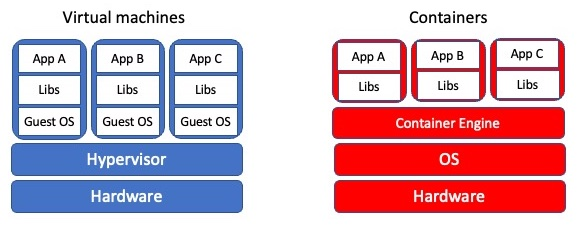

Upscaling AI Workflows
Artificial Intelligence (AI) has become a foundational building block of our modern world. Accordingly, a vast effort has been put into bringing AI to researchers and practitioners of a wide range of fields. Nonetheless, the computationally intensive task of training an AI increasingly requires more computational power than what our laptops and PCs can offer. Therefore, the ability to develop and train a neural network on large clusters seems imperative. This workshop teaches us how to scale an AI-powered application in large clusters, i.e., supercomputers.
Prerequisites
Working knowledge of Unix OS is required. In addition, a basic understanding of Neural Networks (NNs) is desirable. Please follow the link to install docker locally on your laptop as we need to use it for some part of the begininng of this workshop. Details of using and accessing to the Vega cluster are given in Access to Vega section.
Access to Vega
You should have received your username from the Vega support with the help of our colleagues at ENCCS. One important step to login to the system is to generate an SSH key and upload your public to the server. You can read it in the Vega documentation.
Once the setup is completed, you can login to the system. While the Singularity
module is readily available in the login node, we should book a compute node to run
our examples. You can book a CPU-node for 1 hour using this command
salloc -n 1 -t 1:00:00
And for a GPU-node with X number of GPUs per node (there are 4 GPUs available per node in Vega)
salloc -n 1 --gres=gpu:X --partition=gpu --mem-per-gpu=40GB --reservation enccs \
--ntasks 4 --cpus-per-task 1 -t 02:00:00
Once the allocation is granted you will receive a message similar to
salloc: Pending job allocation 24122556
salloc: job 24122556 queued and waiting for resources
salloc: job 24122556 has been allocated resources
salloc: Granted job allocation 24122556
salloc: Waiting for resource configuration
salloc: Nodes cn0381 are ready for job
The granted CPU compute node here is cn0381. The general form for the CPU compute node likes like cn0XXX for GPU compute node gnXXX. Now you should SSH to the compute node to run interactively our job using the command
ssh cn0381
You might get a warning regarding the authenticity of the host, similar to the output below.
The authenticity of host 'cn0381 (<no hostip for proxy command>)' can't be established.
ECDSA key fingerprint is SHA256:0BOlvbjVPLytjYEium04uNTCACCQN/Rr7NMJhje30aw.
Are you sure you want to continue connecting (yes/no/[fingerprint])? yes
Warning: Permanently added 'cn0381' (ECDSA) to the list of known hosts.
Please enter yes to the question and ignore it as it is a self-assigned useless check
that doesn’t understand what is the purpose of our login. Now, we are able to run
our jobs interactively.
To run Jupyter Notebooks, we need to load Anaconda module.
module load Anaconda3/2020.11
module load scikit-learn
Afterwards, you can run a Jupyter kernel by specifying the port number and ip address. The ip address here is the name of compute node, in the example given above is cn0381.
jupyter-notebook --no-browser --port=8888 --ip=cn0381
The result should look like
[I 13:21:26.105 NotebookApp] JupyterLab extension loaded from /cvmfs/sling.si/modules/el7/software/Anaconda3/2020.11/lib/python3.8/site-packages/jupyterlab
[I 13:21:26.105 NotebookApp] JupyterLab application directory is /cvmfs/sling.si/modules/el7/software/Anaconda3/2020.11/share/jupyter/lab
[I 13:21:26.107 NotebookApp] Serving notebooks from local directory: /ceph/hpc/home/euhosseine
[I 13:21:26.107 NotebookApp] Jupyter Notebook 6.1.4 is running at:
[I 13:21:26.107 NotebookApp] http://cn0381:8888/?token=80d695595aa333c6d97dc6f868f96b36f4812622a5008090
[I 13:21:26.107 NotebookApp] or http://127.0.0.1:8888/?token=80d695595aa333c6d97dc6f868f96b36f4812622a5008090
[I 13:21:26.107 NotebookApp] Use Control-C to stop this server and shut down all kernels (twice to skip confirmation).
[C 13:21:26.122 NotebookApp]
To access the notebook, open this file in a browser:
file:///ceph/hpc/home/euhosseine/.local/share/jupyter/runtime/nbserver-339349-open.html
Or copy and paste one of these URLs:
http://cn0381:8888/?token=80d695595aa333c6d97dc6f868f96b36f4812622a5008090
or http://127.0.0.1:8888/?token=80d695595aa333c6d97dc6f868f96b36f4812622a5008090
In your local machine (PC/laptop), open a terminal and use this command to tunnel to the running kernel on Vega.
ssh -N -f -L 8888:cn0381:8888 username@vglogin0005.vega.izum.si
The first port number is for your local machine and the second port number is what
you specified above running a Jupyter Notebook. Open a browser, and enter http://localhost:8888.
You should see a prompt to enter the password or the token. The token in this run is the number after
the token. Entering the token, you will be shown the tree of structure of home folder.
To use TensorFlow or Horovod in this course, we can simply load them through module system.
module load TensorFlow/2.5.0-fosscuda-2020b
Or
module load Horovod/0.22.1-fosscuda-2020b-TensorFlow-2.5.0
5 min |
|
10 min |
|
10 min |
|
10 min |
|
10 min |
|
10 min |
|
10 min |
|
10 min |
|
25 min |
|
25 min |
|
25 min |
|
25 min |
Introduction to Containers

When software is deployed, a set of libraries and configuration files is used in a runtime environment. Typically, we have several applications running in the runtime environment. Therefore, if a system update changes a lib to fix an issue, it might break other apps that use the same library. We all have experienced this at some point.
As a developer, you need to control the version of libraries within the runtime environment. Two technologies that can help you achieve this goal are Containers and Virtual Machines (VMs). Managing the environment of the apps becomes possible with the help of “virtualization.” The system resources, e.g., RAM, CPU, storage, networking, can be “virtually” delivered as multiple resources in the virtualization process.
Containers are executable units of software that encapsulate everything to run. In principle, one can run containers anywhere. Containers use the operating system (OS) level virtualization, isolating processes from the rest of the OS environment and controlling the allocation of (hardware) resources. The isolation is enabled via kernel namespaces and cgroups (as we will discuss them in detail at namespc-cgroup section), which have been in Linux for a long time.
Virtualization
Containers are an example of what’s called virtualization – having a second “virtual” computer running and accessible from a main or host computer. A VM typically contains a whole copy of an operating system in addition to its own file system and has to get booted up in the same way a computer would. A container is considered a lightweight version of a virtual machine; underneath, the container is using the Linux kernel and simply has some flavor of Linux + the file system inside.
The key differentiator between containers and VMs is that VMs virtualize an entire machine down to the hardware layers and containers only virtualize software layers above the operating system level.
Cons and Pros of Containers
Pros
Containers are lightweight software packages that contain all the dependencies.
Because of their lightweight, it is easy and very fast to iteratively modify them.
Cons
Since containers share the same underlying hardware system, it is possible that an exploit in one container could break out of the container and affect the shared hardware.
Cons and Pros of VMs
Pros
VMs are immune to any exploits or interference from other VMs on a shared host due run in isolation as because of a fully standalone system.
Since VMs are full-flegded OS, they are more dynamic and can be interactively developed. Once the basic hardware definition is specified for a VM, the VM can then be treated as a bare bones computer.
Cons
It is time consuming to build and regenerate VMs, because they encompass a full stack system. Any modifications to a VM snapshot can take significant time to regenerate and validate they behave as expected.
VMs can take up a lot of storage space. They can quickly grow to several Gigabytes in size. This can lead to disk space shortage issues on the VMs host machine.
One final term: if the container is an alternative file system layer that you can access and run from your computer, the container image is like a template for that container. The container image has all the needed information to start up a running copy of the container. A running container tends to be transient and can be started and shut down. The image is more long-lived, as a source file for the container. You could think of the container image like a cookie cutter – it can be used to create multiple copies of the same shape (or container) and is relatively unchanging, where cookies come and go. If you want a different type of container (cookie) you need a different image (cookie cutter).
Putting the Pieces Together
Think back to some of the challenges we described at the beginning. The many layers of scientific software installations make it hard to install and re-install scientific software – which ultimately, hinders reliability and reproducibility.
But now, think about what a container is - a self-contained, complete, separate computer file system. What if you put your scientific software tools into a container?
This solves several of our problems:
There is a clear record of what software and software dependencies were used, from bottom to top.
The container can be used on any computer that has Docker installed
It doesn’t matter whether the computer is Mac, Windows or Linux-based.
The container ensures that you can use the exact same software and environment on your computer and on other resources (like a large-scale computing cluster).
The rest of this workshop will show you how to download and run pre-existing containers on your own computer, and how to create and share your own containers.
Introduction to Docker
There are many container runtime available out there. One of popular runtimes is Docker. Docker has proven to an extraordinary tool for developers and researchers alike. Most of today’s workshop will be spent of Docker command line (CLI) utility.
Downloading Docker images
The docker image command is used to list and modify Docker images.
You can find out what container images you have on your computer by
using the following command (“ls” is short for “list”):
docker image ls
If you’ve just installed Docker, you won’t see any images listed.
To get a copy of the hello-world Docker image from the internet, run
this command:
docker pull hello-world
You should see output like this:
Using default tag: latest
latest: Pulling from library/hello-world
93288797bd35: Pull complete
Digest: sha256:975f4b14f326b05db86e16de00144f9c12257553bba9484fed41f9b6f2257800
Status: Downloaded newer image for hello-world:latest
docker.io/library/hello-world:latest
DockerHub
Where did the hello-world image come from? It came from the
DockerHub website, which is a place to share Docker images with other
people. More on that in a later episode.
Exercise: Check on Your Images
What command would you use to see if the hello-world Docker image
had downloaded successfully and was on your computer? Give it a try
before checking the solution.
Solution
To see if the hello-world image is now on your computer, run:
docker image ls
Note that the downloaded hello-world image is not in the folder
where you are in the terminal! (Run ls by itself to check.) The
image is not a file like our normal programs and files; Docker stores it
in a specific location that isn’t commonly accessed, so it’s necessary
to use the special docker image command to see what Docker images
you have on your computer.
Running the hello-world container
To create and run containers from named Docker images you use the
docker run command. Try the following docker run invocation.
Note that it does not matter what your current working directory is.
docker run hello-world
Hello from Docker!
This message shows that your installation appears to be working correctly.
To generate this message, Docker took the following steps:
The Docker client contacted the Docker daemon.
The Docker daemon pulled the “hello-world” image from the Docker Hub. (arm64v8)
The Docker daemon created a new container from that image which runs the executable that produces the output you are currently reading.
The Docker daemon streamed that output to the Docker client, which sent it to your terminal.
The hello-world container is set up to run an action by default -
namely to print this message.
Using docker run to get the image
We could have skipped the docker pull step; if you use the
docker run command and you don’t already have a copy of the
Docker image, Docker will automatically pull the image first and then
run it.
Running a container with a chosen command
But what if we wanted to do something different with the container? The
output just gave us a suggestion of what to do – let’s use a different
Docker image to explore what else we can do with the docker run
command. The suggestion above is to use ubuntu, but we’re going to
run a different type of Linux, alpine instead because it’s quicker
to download.
Run the Alpine Docker container
Try downloading and running the alpine Docker container. You can
do it in two steps, or one. What are they?
What happened when you ran the Alpine Docker container?
docker run alpine
If you never used the alpine docker image on your computer, docker probably printed a message that it couldn’t find the image and had to download it. If you used the alpine image before, the command will probably show no output. That’s because this particular container is designed for you to provide commands yourself. Try running this instead:
docker run alpine cat /etc/os-release
You should see the output of the cat /etc/os-release command, which
prints out the version of Alpine Linux that this container is using and
a few additional bits of information.
Exercise: Hello World, Part 2
Can you run the container and make it print a “hello world” message? Give it a try before checking the solution.
Solution
Use the same command as above, but with the echo command to
print a message.
docker run alpine echo ‘Hello World’
So here, we see another option – we can provide commands at the end of
the docker run command and they will execute inside the running
container.
Running containers interactively
In all the examples above, Docker has started the container, run a
command, and then immediately shut down the container. But what if we
wanted to keep the container running so we could log into it and test
drive more commands? The way to do this is by adding the interactive
flag -it to the docker run command and by providing a shell
(usually bash or sh) as our command. The alpine docker image
doesn’t include bash so we need to use sh.
docker run -it alpine sh
Your prompt should change significantly to look like this:
/ #
That’s because you’re now inside the running container! Try these commands:
pwdlswhoamiecho $PATHcat /etc/os-release
All of these are being run from inside the running container, so you’ll
get information about the container itself, instead of your computer. To
finish using the container, just type exit.
Reminder of terminology: images and containers
Recall that a container “image” is the template from which particular instances of containers will be created.
Let’s explore our first Docker container. The Docker team provides a
simple container image online called hello-world. We’ll start with
that one.
Cleaning Up Containers
Removing images
The images and their corresponding containers can start to take up a lot of disk space if you don’t clean them up occasionally, so it’s a good idea to periodically remove container images that you won’t be using anymore.
In order to remove a specific image, you need to find out details about the image, specifically, the “image ID”. For example say my laptop contained the following image.
docker image ls
REPOSITORY TAG IMAGE ID CREATED SIZE
hello-world latest fce289e99eb9 15 months ago 1.84kB
You can remove the image with a docker image rm command that includes the image ID, such as:
docker image rm fce289e99eb9
or use the image name, like so:
docker image rm hello-world
However, you may see this output:
Error response from daemon: conflict: unable to remove repository
reference "hello-world" (must force) - container e7d3b76b00f4 is
using its referenced image fce289e99eb9
This happens when Docker hasn’t cleaned up some of the times when a container has been actually run. So before removing the container image, we need to be able to see what containers are currently running, or have been run recently, and how to remove these.
What containers are running?
Working with containers, we are going to shift to a new docker command: docker container. Similar to docker image, we can list running containers by typing:
docker container ls
CONTAINER ID IMAGE COMMAND CREATED STATUS PORTS NAMES
Notice that this command didn’t return any containers because our containers all exited and thus stopped running after they completed their work.
docker ps
The command docker ps serves the same purpose as docker container ls, and comes from the Unix shell command ps which describes running processes.
What containers have run recently?
There is also a way to list running containers, and those that have completed recently, which is to add the –all/-a flag to the docker container ls command as shown below.
docker container ls --all
CONTAINER ID IMAGE COMMAND CREATED STATUS PORTS NAMES
9c698655416a hello-world "/hello" 2 minutes ago Exited (0) 2 minutes ago zen_dubinsky
6dd822cf6ca9 hello-world "/hello" 3 minutes ago Exited (0) 3 minutes ago eager_engelbart
Keeping it clean
You might be surprised at the number of containers Docker is still keeping track of. One way to prevent this from happening is to add the –rm flag to docker run. This will completely wipe out the record of the run container when it exits. If you need a reference to the running container for any reason, don’t use this flag.
How do I remove an exited container?
To delete an exited container you can run the following command, inserting the CONTAINER ID for the container you wish to remove. It will repeat the CONTAINER ID back to you, if successful.
docker container rm 9c698655416a
output:
9c698655416a
If you want to remove all exited containers at once you can use the docker containers prune command. Be careful with this command. If you have containers you may want to reconnect to, you should not use this command. It will ask you if to confirm you want to remove these containers, see output below. If successful it will print the full CONTAINER ID back to you.
docker container prune
Output:
WARNING! This will remove all stopped containers.
Are you sure you want to continue? [y/N] y
Deleted Containers:
9c698655416a848278d16bb1352b97e72b7ea85884bff8f106877afe0210acfc
6dd822cf6ca92f3040eaecbd26ad2af63595f30bb7e7a20eacf4554f6ccc9b2b
Removing images
Now that we’ve removed any potentially running or stopped containers, we can try again to delete the hello-world image.
docker image rm hello-world
output
Untagged: hello-world:latest
Untagged: hello-world@sha256:5f179596a7335398b805f036f7e8561b6f0e32cd30a32f5e19d17a3cda6cc33d
Deleted: sha256:fce289e99eb9bca977dae136fbe2a82b6b7d4c372474c9235adc1741675f587e
Deleted: sha256:af0b15c8625bb1938f1d7b17081031f649fd14e6b233688eea3c5483994a66a3
The reason that there are a few lines of output, is that a given image may have been formed by merging multiple underlying layers. Any layers that are used by multiple Docker images will only be stored once. Now the result of docker image ls should no longer include the hello-world image.
Creating your own container images
There are lots of reasons why you might want to create your own Docker image.
You can’t find a container with all the tools you need on Docker Hub.
You want to have a container to “archive” all the specific software versions you ran for a project
You want to share your workflow with someone else.
Interactive installation
Before creating a reproducible installation, let’s experiment with installing software inside a container. Start the alpine container from before, interactively:
docker run -it ubuntu sh
Because this is a basic container, there’s a lot of things not installed – for example, python3.
/# python3
Output
sh: 1: python3: not found
Inside the container, we can run commands to install Python 3. The Ubuntu version of Linux has a installation tool called apt install that we can use to install Python 3.
/# apt update && apt install -y python3 pip
We can test our installation by running a Python command:
/# python3 --version
Once Python is installed, we can add Python packages using the pip package installer:
/# pip install cython
Once we exit, these changes are not saved to a new container by default. There is a command that will “snapshot” our changes, but building containers this way is not very reproducible. Instead, we’re going to take what we’ve learned from this interactive installation and create our container from a reproducible recipe, known as a Dockerfile.
If you haven’t already, exit out of the interactively running container.
/# exit
Put installation instructions in a Dockerfile
A Dockerfile is a plain text file with keywords and commands that can be used to create a new container image.
Every Dockerfile is composed of three main parts as shown below.
FROM <EXISTING IMAGE>
RUN <INSTALL CMDS FROM SHELL>
RUN <INSTALL CMDS FROM SHELL>
CMD <CMD TO RUN BY DEFAULT>
Let’s break this file down:
The first line, FROM, indicates which container we’re starting with.
The next two lines RUN, will indicate installation commands we want to run. These are the same commands that we used interactively above.
The last line, CMD indicates the default command we want the container to run, if no other command is provided.
Take a Guess
Do you have any ideas about what we should use to fill in the sample Dockerfile to replicate the installation we did above?
Solution
Based on our experience above, edit the Dockerfile (in your text editor of choice) to look like this:
FROM ubuntu:18.04
RUN apt update && apt install -y python3 pip
RUN pip install cython
CMD python3 --version
The recipe provided by this Dockerfile will use Ubuntu Linux as the base container, add Python and the Cython library, and set a default print command.
Create a new Docker image
So far, we just have a file. We want Docker to take this file, run the install commands inside, and then save the resulting container as a new container image. To do this we will use the docker build command.
We have to provide docker build with two pieces of information:
the location of the Dockerfile
the name of the new image. Remember the naming scheme from before? You should name your new image with your Docker Hub username and a name for the container, like this:
USERNAME/CONTAINERNAME
All together, the build command will look like this:
docker build -t USERNAME/CONTAINERNAME .
The -t option names the container; the final dot indicates that the Dockerfile is in our current directory.
For example, if my user name was alice and I wanted to call my image alpine-python, I would use this command:
docker build -t alice/ubuntu-python .
Review!
Think back to earlier. What command can you run to check if your image was created successfully? (Hint: what command shows the images on your computer?)
We didn’t specify a tag for our image name. What did Docker automatically use?
What command will run the container you’ve created? What should happen by default if you run the container? Can you make it do something different, like print “hello world”?
Solution
To see your new image, run docker image ls. You should see the name of your new image under the “REPOSITORY” heading.
In the output of docker image ls, you can see that Docker has automatically used the latest tag for our new image.
We want to use docker run to run the container.
docker run alice/ubuntu-python
should run the container and print out our default message, including the version of Linux and Python.
docker run alice/ubuntu-python echo "Hello World"
will run the container and print out “Hello world” instead.
While it may not look like you have achieved much, you have already effected the combination of a lightweight Linux operating system with your specification to run a given command that can operate reliably on macOS, Microsoft Windows, Linux and on the cloud!
Creating More Complex Container Images
In order to create and use your own containers, you may need more information than our previous example. You may want to use files from outside the container, copy those files into the container, and just generally learn a little bit about software installation. This episode will cover these. Note that the examples will get gradually more and more complex - most day-to-day use of containers can be accomplished using the first 1-2 sections on this page.
Using scripts and files from outside the container
Let’s create a file and folder called it foo/dummy.py in the root
folder.
Please copy the Dockerfile and place it in the foo directory.
Let’s say we wanted to try running the script using our recently
created ubuntu-python container.
Running containers
What command would we use to run python from the alpine-python
container?
If we try running the container and Python script, what happens?
docker run alice/ubuntu-python python3 dummy.py
Output
python3: can’t open file ‘dummy.py’: [Errno 2] No such file or directory
No such file or directory
What does the error message mean? Why might the Python inside the container not be able to find or open our script?
The problem here is that the container and its file system is separate from our host computer’s file system. When the container runs, it can’t see anything outside itself, including any of the files on our computer. In order to use Python (inside the container) and our script (outside the container, on our computer), we need to create a link between the directory on our computer and the container.
This link is called a “mount” and is what happens automatically when a USB drive or other external hard drive gets connected to a computer - you can see the contents appear as if they were on your computer.
We can create a mount between our computer and the running container by
using an additional option to docker run. We’ll also use the
variable $PWD which will substitute in our current working
directory. The option will look like this
-v $PWD:/temp
What this means is – link my current directory with the container, and
inside the container, name the directory /temp
Let’s try running the command now:
docker run -v $PWD:/temp alice/ubuntu-python python3 dummy.py
But we get the same error!
python3: can't open file 'dummy.py': [Errno 2] No such file or directory
This final piece is a bit tricky – we really have to remember to put ourselves inside the container. Where is the dummy.py file? It’s in the directory that’s been mapped to /temp – so we need to include that in the path to the script. This command should give us what we need:
docker run -v $PWD:/temp alice/alpine-python python3 /temp/dummy.py
Note that if we create any files in the /temp directory while the container is running, these files will appear on our host filesystem in the original directory and will stay there even when the container stops.
Mounting a folder can be very useful when you want to run the software inside your container on many different input files. In other situations, you may want to save or archive an authoritative version of your data by adding it to the container permanently. That’s what we will cover next.
Including personal scripts and data in a container
Our next project will be to add our own files to a container - something you might want to do if you’re sharing a finished analysis or just want to have an archived copy of your entire analysis including the data. Let’s as some that we’ve finished with our dummy.py script and want to add it to the container itself.
In your shell, you should still be in the dummy folder in the docker-intro folder.
pwd
Output
/Users/yourname/foo
We will modify our Dockerfile again to build an image based on Alpine Linux with Python 3 installed (just as we did perviously). This time we will add an additional line before the CMD line:
COPY dummy.py /home
This line will cause Docker to copy the file from your computer into the container’s file system at build time. Modify the Dockerfile as before (or copy the version from the basic/ subdirectory) and add the extra copy line. Once you have done that, build the container like before, but give it a different name:
docker build -t alice/ubuntu-dummy .
Did it work?
Can you remember how to run a container interactively? Try that with this one. Once inside, try running the Python script.
Solution
You can start the container interactively like so:
docker run -it alice/ubuntu-dummy sh
You should be able to run the python command inside the container like this:
/# python3 /home/dummy.py
This COPY keyword can be used to place your own scripts or own data into a container that you want to publish or use as a record. Note that it’s not necessarily a good idea to put your scripts inside the container if you’re constantly changing or editing them. Then, referencing the scripts from outside the container is a good idea, as we did in the previous section. You also want to think carefully about size – if you run docker image ls you’ll see the size of each image all the way on the right of the screen. The bigger your image becomes, the harder it will be to easily download.
More fancy Dockerfile options
We can expand on the example above to make our container even more “automatic”. Here are some ideas:
Make the dummy.py script run automatically:
FROM ubuntu:18.04
COPY dummy.py /home
RUN apt update && apt install -y python3
# Run the dummy.py script as the default command
CMD python3 /home/dummy.py
# OR
# CMD ["python3", "/home/dummy.py"]
Build and test it:
docker build -t ubuntu-dummy:v1 .
docker run ubuntu-dummy:v1
Make the dummy.py script run automatically with arguments from the command line:
FROM ubuntu:18.04
COPY dummy.py /home
RUN apt update && apt install -y python3
# Run the dummy.py script as the default command and
# allow people to enter arguments for it
ENTRYPOINT ["python3", "/home/dummy.py"]
Build and test it:
docker build -t ubuntu-dummy:v2 .
docker run ubuntu-dummy:v2
Add the dummy.py script to the PATH so you can run it directly:
FROM ubuntu:18.04
COPY dummy.py /home
# set script permissions
RUN chmod +x /home/dummy.py
# add /home folder to the PATH
ENV PATH /home:$PATH
RUN apt update && apt install -y python3
Build and test it:
docker build -t ubuntu-dummy:v3 .
docker run alpine-dummy:v3 dummy.py
What is Singularity?
Singularity is another container platform. In some ways it appears similar to Docker from a user perspective, but in others, particularly in the system’s architecture, it is fundamentally different. These differences mean that Singularity is particularly well-suited to running on distributed, High Performance Computing (HPC) infrastructure, as well as a Linux laptop or desktop!
System administrators will not, generally, install Docker on shared computing platforms such as lab desktops, research clusters or HPC platforms because the design of Docker presents potential security issues for shared platforms with multiple users. Singularity, on the other hand, can be run by end-users entirely within “user space”, that is, no special administrative privileges need to be assigned to a user in order for them to run and interact with containers on a platform where Singularity has been installed.
Getting started with Singularity
Initially developed within the research community, Singularity is open source and the repository is currently available in the “The Next Generation of High Performance Computing” GitHub organisations. Part I of this Singularity material is intended to be undertaken on a remote platform where Singularity has been pre-installed.
If you’re attending a taught version of this course, you will be provided with access details for a remote platform made available to you for use for Part I of the Singularity material. This platform will have the Singularity software pre-installed.
Installing Singularity on your own laptop/desktop
If you have a Linux system on which you have administrator access and you can install Singularity locally on this system.
Sign in to the Vega system that you’ve been provided with access to. Check that the singularity command is available in your terminal:
singularity --version
Output
SingularityPRO version 3.7-5.el8
Depending on the version of Singularity installed on your system, you may see a different version.
Singularity on HPC systems: Loading a module
HPC systems often use modules to provide access to software on the system. If you get a command not found error (e.g. bash: singularity: command not found or similar) you may need to load the singularity module before you can use the singularity command:
module load singularity
Nonetheless, for the Vega system singularity is readily available.
Images and containers
We’ll start with a brief note on the terminology used in this section of the course. We refer to both images and containers. What is the distinction between these two terms?
Images are bundles of files including an operating system, software and potentially data and other application-related files. They may sometimes be referred to as a disk image or container image and they may be stored in different ways, perhaps as a single file, or as a group of files. Either way, we refer to this file, or collection of files, as an image.
A container is a virtual environment that is based on an image. That is, the files, applications, tools, etc that are available within a running container are determined by the image that the container is started from. It may be possible to start multiple container instances from an image. You could, perhaps, consider an image to be a form of template from which running container instances can be started.
Getting an image and running a Singularity container
If you recall from learning about Docker, Docker images are formed of a set of layers that make up the complete image. When you pull a Docker image from Docker Hub, you see the different layers being downloaded to your system. They are stored in your local Docker repository on your system and you can see details of the available images using the docker command.
Singularity images are a little different. Singularity uses the Signularity Image Format (SIF) and images are provided as single SIF files. Singularity images can be pulled from Singularity Hub, a registry for container images. Singularity is also capable of running containers based on images pulled from Docker Hub and some other sources. We’ll look at accessing containers from Docker Hub later in the Singularity material.
Singularity Hub
Note that in addition to providing a repository that you can pull images from, Singularity Hub can also build Singularity images for you from a recipe - a configuration file defining the steps to build an image. We’ll look at recipes and building images later.
Let’s begin by creating a test directory, changing into it and pulling a test Hello World image from Singularity Hub:
mkdir test
cd test
singularity pull hello-world.sif shub://vsoch/hello-world
Note
What is the main difference between above and the Docker pull request?
Output
INFO: Downloading shub image
59.75 MiB / 59.75 MiB [=====================================================================] 100.00% 52.03 MiB/s 1s
What just happened?! We pulled a SIF image from Singularity Hub using the singularity pull command and directed it to store the image file using the name hello-world.sif. If you run the ls command, you should see that the hello-world.sif file is now in your current directory. This is our image and we can now run a container based on this image:
singularity run hello-world.sif
Output
RaawwWWWWWRRRR!! Avocado!
The above command ran the hello-world container from the image we downloaded from Singularity Hub and the resulting output was shown.
How did the container determine what to do when we ran it?! What did running the container actually do to result in the displayed output?
When you run a container from an image without using any additional command line arguments, the container runs the default run script that is embedded within the image. This is a shell script that can be used to run commands, tools or applications stored within the image on container startup. We can inspect the image’s run script using the singularity inspect command:
singularity inspect -r hello-world.sif
Output
#!/bin/sh
exec /bin/bash /rawr.sh
This shows us the script within the hello-world.sif image configured
to run by default when we use the singularity run command.
That concludes this introductory Singularity episode. The next episode looks in more detail at running containers.
Working with Singularity containers
Singularity’s image cache
While Singularity doesn’t have a local image repository in the same way as Docker, it does cache downloaded image files. As we saw in the previous episode, images are simply .sif files stored on your local disk.
If you delete a local .sif image that you have pulled from a remote image repository and then pull it again, if the image is unchanged from the version you previously pulled, you will be given a copy of the image file from your local cache rather than the image being downloaded again from the remote source. This removes unnecessary network transfers and is particularly useful for large images which may take some time to transfer over the network. To demonstrate this, remove the hello-world.sif file stored in your test directory and then issue the pull command again:
rm hello-world.sif
singularity pull hello-world.sif shub://vsoch/hello-world
Output
INFO: Use image from cache
As we can see in the above output, the image has been returned from the cache and we don’t see the output that we saw previously showing the image being downloaded from Singularity Hub.
How do we know what is stored in the local cache? We can find out using the singularity cache command:
singularity cache list
There are 1 container file(s) using 62.65 MB and 0 oci blob file(s)
using 0.00 kB of space Total space used: 62.65 MB
This tells us how many container files are stored in the cache and how much disk space the cache is using but it doesn’t tell us what is actually being stored. To find out more information we can add the -v verbose flag to the list command:
singularity cache list -v
Output
NAME DATE CREATED SIZE TYPE
hello-world_latest.sif 2020-04-03 13:20:44 62.65 MB shub
There are 1 container file(s) using 62.65 MB and 0 oci blob file(s) using 0.00 kB of space
Total space used: 62.65 MB
This provides us with some more useful information about the actual images stored in the cache. In the TYPE column we can see that our image type is shub because it’s a SIF image that has been pulled from Singularity Hub.
Cleaning the Singularity image cache
We can remove images from the cache using the singularity cache clean command. Running the command without any options will display a warning and ask you to confirm that you want to remove everything from your cache. You can also remove specific images or all images of a particular type. Look at the output of singularity cache clean –help for more information.
Basic exercise: Clearing specific image types from the cache
What command would you use to remove only images of type shub from your local Singularity image cache? How could you test this safely to ensure your command is going to do the right thing?
Tip
You can see exactly what would be deleted by using the --dry-run option or -n.
Solution
singularity cache clean --type=shub
singularity cache clean -n --type=shub
Removing /<cache_dir>/.singularity/cache/shub
Working with containers
Running specific commands within a container
We saw earlier that we can use the singularity inspect command to see the run script that a container is configured to run by default. What if we want to run a different command within a container, or we want to open a shell within a container that we can interact with?
If we know the path of an executable that we want to run within a container, we can use the singularity exec command. For example, using the hello-world.sif container that we’ve already pulled from Singularity Hub, we can run the following within the test directory where the hello-world.sif file is located:
singularity exec hello-world.sif /bin/echo Hello World!
Output
Hello World!
Here we see that a container has been started from the hello-world.sif image and the /bin/echo command has been run within the container, passing the input Hello World!. The command has echoed the provided input to the console and the container has terminated.
Basic exercise: Running a different command within the “hello-world” container
Can you run a container based on the hello-world.sif image that prints the current date and time?
Solution
singularity exec hello-world.sif /bin/date
Output
Fri Jun 26 15:17:44 BST 2020
Running a shell within a container
If you want to open an interactive shell within a container, Singularity provides the singularity shell command. Again, using the hello-world.sif image, and within our test directory, we can run a shell within a container from the hello-world image:
singularity shell hello-world.sif
Output
Singularity> whoami
[<your username>]
Singularity> ls
hello-world.sif
Singularity>
As shown above, we have opened a shell in a new container started from the hello-world.sif image.
Running a shell inside a Singularity container
Q: What do you notice about the output of the above commands entered within the Singularity container shell?
Q: Does this differ from what you might see within a Docker container?
Use the exit command to exit from the container shell.
Users, files and directories within a Singularity container
The first thing to note is that when you run whoami within the container you should see the username that you are signed in as on the host system when you run the container. For example, if my username is jc1000:
singularity shell hello-world.sif
Singularity> whoami
jc1000
But hang on! I downloaded the standard, public version of the hello-world.sif image from Singularity Hub. I haven’t customised it in any way. How is it configured with my own user details?!
If you have any familiarity with Linux system administration, you may be aware that in Linux, users and their Unix groups are configured in the /etc/passwd and /etc/group files respectively. In order for the shell within the container to know of my user, the relevant user information needs to be available within these files within the container.
Assuming this feature is enabled on your system, when the container is started, Singularity appends the relevant user and group lines from the host system to the /etc/passwd and /etc/group files within the container [1].
Singularity also binds some directories from the host system where you are running the singularity command into the container that you’re starting. Note that this bind process isn’t copying files into the running container, it is simply making an existing directory on the host system visible and accessible within the container environment. If you write files to this directory within the running container, when the container shuts down, those changes will persist in the relevant location on the host system.
There is a default configuration of which files and directories are bound into the container but ultimate control of how things are set up on the system where you’re running Singularity is determined by the system administrator. As a result, this section provides an overview but you may find that things are a little different on the system that you’re running on.
One directory that is likely to be accessible within a container that you start is your home directory. The mapping of file content and directories from a host system into a Singularity container is illustrated in the example below showing a subset of the directories on the host Linux system and in a Singularity container:
Host system: Singularity container:
------------- ----------------------
/ /
├── bin ├── bin
├── etc ├── etc
│ ├── ... │ ├── ...
│ ├── group ─> user's group added to group file in container ─>│ ├── group
│ └── passwd ──> user info added to passwd file in container ──>│ └── passwd
├── home ├── usr
│ └── jc1000 ───> user home directory made available ──> ─┐ ├── sbin
├── usr in container via bind mount │ ├── home
├── sbin └────────>└── jc1000
└── ... └── ...
Questions and exercises: Files in Singularity containers
Q1: What do you notice about the ownership of files in a container started from the hello-world image? (e.g. take a look at the ownership of files in the root directory (/))
Exercise 1: In this container, try editing (for example using the editor vi which should be avaiable in the container) the /rawr.sh file. What do you notice?
If you’re not familiar with vi there are many quick reference pages online showing the main commands for using the editor, for example this one
Exercise 2: In your home directory within the container shell, try and create a simple text file. Is it possible to do this? If so, why? If not, why not?! If you can successfully create a file, what happens to it when you exit the shell and the container shuts down?
Solution
A1: Use the ls -l command to see a detailed file listing including file ownership and permission details. You may see that all the files are owned by you, alternatively, most files in the root (/) directory may be owned by the root user. If the files are owned by you, this looks good - you should be ready to edit something in the exercise that follows…otherwise, if the files are owned by root, maybe not…
Exercise 1: Unfortunately, it’s not so easy, depending on how you tried to edit /rawr.sh you probably saw an error similar to the following: Can’t open file for writing or Read-only file system
Exercise 2: Within your home directory, you should be able to successfully create a file. Since you’re seeing your home directory on the host system which has been bound into the container, when you exit and the container shuts down, the file that you created within the container should still be present when you look at your home directory on the host system.
Using Docker images with Singularity
Singularity can also start containers from Docker images, opening up access to a huge number of existing container images available on Docker Hub and other registries.
While Singularity doesn’t support running Docker images directly, it can pull them from Docker Hub and convert them into a suitable format for running via Singularity. When you pull a Docker image, Singularity pulls the slices or layers that make up the Docker image and converts them into a single-file Singularity SIF image.
For example, moving on from the simple Hello World examples that we’ve looked at so far, let’s pull one of the official Docker Python images. We’ll use the image with the tag 3.8.6-slim-buster which has Python 3.8.6 installed on Debian’s Buster (v10) Linux distribution:
singularity pull python-3.8.6.sif docker://python:3.8.6-slim-buster
Output
INFO: Converting OCI blobs to SIF format
INFO: Starting build...
Getting image source signatures
Copying blob 852e50cd189d done
Copying blob 334ed303e4ad done
Copying blob a687a65725ea done
Copying blob fe607cb30fbe done
Copying blob b8a3bc0a3645 done
Copying config 08d8e312de done
Writing manifest to image destination
Storing signatures
2020/12/07 18:36:18 info unpack layer: sha256:852e50cd189dfeb54d97680d9fa6bed21a6d7d18cfb56d6abfe2de9d7f173795
2020/12/07 18:36:19 info unpack layer: sha256:334ed303e4ad2f8dc872f2e845d79012ad648eaced444e009ae9a397cc4b4dbb
2020/12/07 18:36:19 info unpack layer: sha256:a687a65725ea883366a61d24db0f946ad384aea893297d9510e50fa13f565539
2020/12/07 18:36:19 info unpack layer: sha256:fe607cb30fbe1148b5885d58c909d0c08cbf2c0848cc871845112f3ee0a0f9ba
2020/12/07 18:36:19 info unpack layer: sha256:b8a3bc0a3645e2afcd8807830833a0df0bd243d58d518e17b2335342e2614bd3
INFO: Creating SIF file...
INFO: Build complete: python-3.8.6.sif
Note how we see singularity saying that it’s “Converting OCI blobs to SIF format”. We then see the layers of the Docker image being downloaded and unpacked and written into a single SIF file. Once the process is complete, we should see the python-3.8.6.sif image file in the current directory.
We can now run a container from this image as we would with any other singularity image.
Running the Python 3.8.6 image that we just pulled from Docker Hub
E1: Try running the Python 3.8.6 image. What happens?
E2: Try running some simple Python statements…
Solution
Running the Python 3.8.6 image
singularity run python-3.8.6.sif
This should put you straight into a Python interactive shell within the running container:
Python 3.8.6 (default, Nov 25 2020, 02:47:44)
[GCC 8.3.0] on linux
Type "help", "copyright", "credits" or "license" for more information.
>>>
Now try running some simple Python statements:
>>> import math
>>> math.pi
3.141592653589793
>>>
In addition to running a container and having it run the default run script, you could also start a container running a shell in case you want to undertake any configuration prior to running Python. This is covered in the following exercise:
Open a shell within a Python container
Try to run a shell within a singularity container based on the python-3.8.6.sif image. That is, run a container that opens a shell rather than the default Python interactive console as we saw above. Can you find more than one way to achieve this?
Within the shell, try starting the Python interactive console and running some Python commands.
Solution
Recall from the earlier material that we can use the singularity shell command to open a shell within a container. To open a regular shell within a container based on the python-3.8.6.sif image, we can therefore simply run:
singularity shell python-3.8.6.sif
Singularity> echo $SHELL
/bin/bash
Singularity> cat /etc/issue
Debian GNU/Linux 10 \n \l
Singularity> exit
It is also possible to use the singularity exec command to run an executable within a container. We could, therefore, use the exec command to run /bin/bash:
singularity exec python-3.8.6.sif /bin/bash
Singularity> echo $SHELL
/bin/bash
You can run the Python console from your container shell simply by running the python command.
This concludes the second episode and Part I of the Singularity material. Part II contains a further two episodes where we’ll look creating your own images and then more advanced use of containers for running MPI parallel applications.
References
Building Singularity images
Preparing to use Singularity for building images
So far you’ve been able to work with Singularity from your own user account as a non-privileged user. This part of the Singularity material requires that you use Singularity in an environment where you have administrative (root) access. While it is possible to build Singularity containers without root access, it is highly recommended that you do this as the root user, as highlighted in this section of the Singularity documentation. Bear in mind that the system that you use to build containers doesn’t have to be the system where you intend to run the containers. If, for example, you are intending to build a container that you can subsequently run on a Linux-based cluster, you could build the container on your own Linux-based desktop or laptop computer. You could then transfer the built image directly to the target platform or upload it to an image repository and pull it onto the target platform from this repository.
There are three different options for accessing a suitable environment to undertake the material in this part of the course:
Run Singularity from within a Docker container - this will enable you to have the required privileges to build images
Install Singularity locally on a system where you have administrative access
Use Singularity on a system where it is already pre-installed and you have administrative (root) access
We’ll focus on the first option in this part of the course. If you would like to install Singularity directly on your system, see the box below for some further pointers. Note that the installation process is an advanced task that is beyond the scope of this course so we won’t be covering this.
Note
Installing Singularity on your local system (optional)
If you are running Linux and would like to install Singularity locally on your system, Singularity provide the free, open source Singularity Community Edition. You will need to install various dependencies on your system and then build Singularity from source code.
If you are not familiar with building applications from source code, it is strongly recommended that you use the Docker Singularity image, as described below in the “Getting started with the Docker Singularity image” section rather than attempting to build and install Singularity yourself. The installation process is an advanced task that is beyond the scope of this session.
However, if you have Linux systems knowledge and would like to attempt a local install of Singularity, you can find details in the INSTALL.md file within the Singularity repository that explains how to install the prerequisites and build and install the software. Singularity is written in the Go programming language and Go is the main dependency that you’ll need to install on your system. The process of installing Go and any other requirements is detailed in the INSTALL.md file.
Tip
If you do not have access to a system with Docker installed, or a Linux system where you can build and install Singularity but you have administrative privileges on another system, you could look at installing a virtualisation tool such as VirtualBox on which you could run a Linux Virtual Machine (VM) image. Within the Linux VM image, you will be able to install Singularity. Again this is beyond the scope of the course.
If you are not able to access/run Singularity yourself on a system where you have administrative privileges, you can still follow through this material as it is being taught (or read through it in your own time if you’re not participating in a taught version of the course) since it will be helpful to have an understanding of how Singularity images can be built.
You could also attempt to follow this section of the lesson without
using root and instead using the singularity command’s –fakeroot option.
However, you may encounter issues with permissions when trying to
build images and run your containers and this is why running the
commands as root is strongly recommended and is the approach
described in this lesson.
Getting started with the Docker Singularity image
The Singularity Docker image is available from Quay.io.
Familiarise yourself with the Docker Singularity image
Using your previously acquired Docker knowledge, get the Singularity image for
v3.8.2and ensure that you can run a Docker container using this image. You might want to use the v3.8.2-slim for Intel/AMD architecture or v3.8.2-slim-arm64 for Arm architecture version of this image since it is significantly smaller than the standard image - the slim version of the image will be used in the examples below.Create a directory (e.g.
$HOME/singularity_data) on your host machine that you can use for storage of definition files (we’ll introduce these shortly) and generated image files.This directory should be bind mounted into the Docker container at the location /home/singularity every time you run it - this will give you a location in which to store built images so that they are available on the host system once the container exits. (take a look at the
-vswitch)Note: To be able to build an image using the Docker Singularity container, you’ll probably need to add the
--privilegedswitch to your docker command line.What is happening when you run the container?
Can you run an interactive shell in the container?
Running the image
- Having a bound directory from the host system accessible within
your running Singularity container will give you somewhere to place created images so that they are accessible on the host system after the container exits. Begin by changing into the directory that you created above for storing your definiton files and built images (e.g.
$HOME/singularity_data).You may choose to:
open a shell within the Docker image so you can work at a command prompt and run the
singularitycommand directlyuse the
docker runcommand to run a new container instance every time you want to run the singularity command.
Either option is fine for this section of the material.
Some examples:
To run the
singularitycommand within the docker container directly from the host system’s terminal:docker run -it --privileged --rm -v ${PWD}:/home/singularity quay.io/singularity/singularity:v3.8.2-slim cache list
To start a shell within the Singularity Docker container where the singularity command can be run directly:
docker run -it --entrypoint=/bin/sh --privileged --rm -v ${PWD}:/home/singularity quay.io/singularity/singularity:v3.8.2-slim
To make things easier to read in the remainder of the material, command examples will use the
singularitycommand directly, e.g.singularity cache list. If you’re running a shell in the Docker container, you can enter the commands as they appear. If you’re using the container’s default run behavior and running a container instance for each run of the command, you’ll need to replacesingularitywithdocker run --privileged -v ${PWD}:/home/singularity quay.io/singularity/singularity:v3.8.2-slimor similar.
Building Singularity images
Introduction
As a platform that is widely used in the scientific/research software and HPC communities, Singularity provides great support for reproducibility. If you build a Singularity container for some scientific software, it’s likely that you and/or others will want to be able to reproduce exactly the same environment again. Maybe you want to verify the results of the code or provide a means that others can use to verify the results to support a paper or report. Maybe you’re making a tool available to others and want to ensure that they have exactly the right version/configuration of the code.
Similarly to Docker and many other modern software tools, Singularity follows the “Configuration as code” approach and a container configuration can be stored in a file which can then be committed to your version control system alongside other code. Assuming it is suitably configured, this file can then be used by you or other individuals (or by automated build tools) to reproduce a container with the same configuration at some point in the future.
Different approaches to building images
There are various approaches to building Singularity images. We highlight two different approaches here and focus on one of them:
Building within a sandbox: You can build a container interactively within a sandbox environment. This means you get a shell within the container environment and install and configure packages and code as you wish before exiting the sandbox and converting it into a container image.
Building from a Singularity Definition File: This is Singularity’s equivalent to building a Docker container from a Dockerfile and we’ll discuss this approach in this section.
You can take a look at Singularity’s “Build a Container” documentation for more details on different approaches to building containers.
Why look at Singularity Definition Files?
Why do you think we might be looking at the definition file approach here rather than the sandbox approach?
Solution
The sandbox approach is great for prototyping and testing out an image configuration but it doesn’t provide the best support for our ultimate goal of reproducibility. If you spend time sitting at your terminal in front of a shell typing different commands to add configuration, maybe you realize you made a mistake so you undo one piece of configuration and change it. This goes on until you have your completed configuration but there’s no explicit record of exactly what you did to create that configuration.
Say your container image file gets deleted by accident, or someone else wants to create an equivalent image to test something. How will they do this and know for sure that they have the same configuration that you had? With a definition file, the configuration steps are explicitly defined and can be easily stored, for example within a version control system, and re-run.
Definition files are small text files while container files may be very large, multi-gigabyte files that are difficult and time consuming to move around. This makes definition files ideal for storing in a version control system along with their revisions.
Creating a Singularity Definition File
A Singularity Definition File is a text file that contains a series of statements that are used to create a container image. In line with the configuration as code approach mentioned above, the definition file can be stored in your code repository alongside your application code and used to create a reproducible image. This means that for a given commit in your repository, the version of the definition file present at that commit can be used to reproduce a container with a known state. It was pointed out earlier in the course, when covering Docker, that this property also applies for Dockerfiles.
We’ll now look at a very simple example of a definition file:
Bootstrap: docker
From: ubuntu:20.04
%post
apt-get -y update && apt-get install -y python3
%runscript
python3 -c 'print("Hello World! Hello from our custom Singularity image!")'
A definition file has a number of optional sections, specified using the % prefix, that are used to define or undertake different configuration during different stages of the image build process. You can find full details in Singularity’s Definition Files documentation. In our very simple example here, we only use the %post and %runscript sections.
Let’s step through this definition file and look at the lines in more detail:
Bootstrap: docker
From: ubuntu:20.04
These first two lines define where to bootstrap our image from. Why can’t we just put some application binaries into a blank image? Any applications or tools that we want to run will need to interact with standard system libraries and potentially a wide range of other libraries and tools. These need to be available within the image and we therefore need some sort of operating system as the basis for our image. The most straightforward way to achieve this is to start from an existing base image containing an operating system. In this case, we’re going to start from a minimal Ubuntu 20.04 Linux Docker image. Note that we’re using a Docker image as the basis for creating a Singularity image. This demonstrates the flexibility in being able to start from different types of images when creating a new Singularity image.
The Bootstrap: docker line is similar to prefixing an image path with docker:// when using, for example,
the singularity pull command. A range of different bootstrap options
are supported. From: ubuntu:20.04 says that we want to use the ubuntu image with the tag 20.04.
Next we have the %post section of the definition file:
%post
apt-get -y update && apt-get install -y python3
In this section of the file we can do tasks such as package installation, pulling data files from remote locations and undertaking local configuration within the image. The commands that appear in this section are standard shell commands and they are run within the context of our new container image. So, in the case of this example, these commands are being run within the context of a minimal Ubuntu 20.04 image that initially has only a very small set of core packages installed.
Here we use Ubuntu’s package manager to update our package indexes and then install the python3 package along
with any required dependencies (in Ubuntu 20.04, the python3 package installs python 3.8.5). The -y switches
are used to accept, by default, interactive prompts that might appear asking you to confirm package updates or installation.
This is required because our definition file should be able to run in an unattended, non-interactive environment.
Finally we have the %runscript section:
%runscript
python3 -c 'print("Hello World! Hello from our custom Singularity image!")'
This section is used to define a script that should be run when a container is started based on this image using the singularity run command. In this simple example we use python3 to print out some text to the console.
We can now save the contents of the simple defintion file shown above to a file and build an image based on it. In the case of this example, the definition file has been named my_test_image.def. (Note that the instructions here assume you’ve bound the image output directory you created to the /home/singularity directory in your Docker Singularity container):
singularity build /home/singularity/my_test_image.sif /home/singularity/my_test_image.def
Recall from the details at the start of this section that if you are running your command from the host system command line, running an instance of a Docker container for each run of the command, your command will look something like this:
docker run -it --privileged --rm -v ${PWD}:/home/singularity quay.io/singularity/singularity:v3.8.2-slim build /home/singularity/my_test_image.sif /home/singularity/my_test_image.def
The above command requests the building of an image based on the my_test_image.def file with the resulting image saved to the my_test_image.sif file. Note that you will need to prefix the command with sudo if you’re running a locally installed version of Singularity and not running via Docker because it is necessary to have administrative privileges to build the image. You should see output similar to the following:
INFO: Starting build...
Getting image source signatures
Copying blob da7391352a9b done
Copying blob 14428a6d4bcd done
Copying blob 2c2d948710f2 done
Copying config aa23411143 done
Writing manifest to image destination
Storing signatures
2020/12/08 09:15:18 info unpack layer: sha256:da7391352a9bb76b292a568c066aa4c3cbae8d494e6a3c68e3c596d34f7c75f8
2020/12/08 09:15:19 info unpack layer: sha256:14428a6d4bcdba49a64127900a0691fb00a3f329aced25eb77e3b65646638f8d
2020/12/08 09:15:19 info unpack layer: sha256:2c2d948710f21ad82dce71743b1654b45acb5c059cf5c19da491582cef6f2601
INFO: Running post scriptlet
+ apt-get -y update
Get:1 http://archive.ubuntu.com/ubuntu focal InRelease [265 kB]
...
[Package update output truncated]
...
Fetched 16.6 MB in 3s (6050 kB/s)
Reading package lists...
+ apt-get install -y python3
Reading package lists...
...
[Package install output truncated]
...
Processing triggers for libc-bin (2.31-0ubuntu9.1) ...
INFO: Adding runscript
INFO: Creating SIF file...
INFO: Build complete: my_test_image.sif
$
You should now have a my_test_image.sif file in the current directory. Note that in
your version of the above output, after it says INFO: Starting build... you may see
a series of skipped: already exists messages for the Copying blob lines. This happens
when the Docker image slices for the Ubuntu 20.04 image have previously been downloaded and
are cached on the system where this example is being run. On your system, if the image is not
already cached, you will see the slices being downloaded from Docker Hub when these lines of output appear.
Permissions of the created image file
You may find that the created Singularity image file on your host filesystem is owned by the root user and not your user. In this case, you won’t be able to change the ownership/permissions of the file directly if you don’t have root access. However, the image file will be readable by you and you should be able to take a copy of the file under a new name which you will then own. You will then be able to modify the permissions of this copy of the image and delete the original root-owned file since the default permissions should allow this.
Testing your Singularity image
In a moment we’ll test the created image on our HPC platform but, first, you should be able to run a shell in an instance of the Docker Singularity container and run your singularity image there.
Run the Singularity image you’ve created
Can you run the Singularity image you’ve just built from a shell within the Docker Singularity container?
Solution
docker run -it --entrypoint=/bin/sh --privileged --rm -v ${PWD}:/home/singularity quay.io/singularity/singularity:v3.8.2-slim
/# cd /home/singularity
/home/singularity# singularity run my_test_image.sif
Output
Hello World! Hello from our custom Singularity image!
/home/singularity#
Using singularity run from within the Docker container
It is strongly recommended that you don’t use the Docker container for running Singularity images in any production setting, only for creating them, since the Singularity command runs within the container as the root user. However, for the purposes of this simple example, the Docker Singularity container provides an ideal environment to test that you have successfully built your container.
Now we’ll test our image on an HPC platform. Move your created .sif image file to a platform with
an installation of Singularity.
You could, for example, do this using the command line secure copy command scp. For example,
the following command would copy
my_test_image.sif to the remote server identified by <target hostname> (don’t forget
the colon at the end of the hostname!):
scp -i <full path to SSH key file> my_test_image.sif <target hostname>:
You could provide a destination path for the file straight after the colon at the end of the above command (without a space), but by default, the file will be uploaded to you home directory.
Try to run the container on the login node of the HPC platform and check that you get the expected output.
It is recommended that you move the create .sif file to a platform with an installation of Singularity, rather than attempting to run the image using the Docker container. However, if you do try to use the Docker container, see the notes below on “Using singularity run from within the Docker container” for further information.
Now that we’ve built an image, we can attempt to run it:
singularity run my_test_image.sif
If everything worked successfully, you should see the message printed by Python:
Hello World! Hello from our custom Singularity image!
Using singularity run from within the Docker container
It is strongly recommended that you don’t use the Docker container
for running Singularity images, only for creating then, since the
Singularity command runs within the container as the root
user. However, for the purposes of this simple example, if you are
trying to run the container using the singularity command from
within the Docker container, it is likely that you will get an error
relating to /etc/localtime similar to the following:
WARNING: skipping mount of /etc/localtime: no such file or directory
FATAL: container creation failed: mount
/etc/localtime->/etc/localtime error: while mounting
/etc/localtime: mount source /etc/localtime doesn't exist
This occurs because the /etc/localtime file that provides
timezone configuration is not present within the Docker container.
If you want to use the Docker container to test that your newly
created image runs, you’ll need to open a shell in the Docker
container and add a timezone configuration as described in the
Alpine Linux documentation:
apk add tzdata
cp /usr/share/zoneinfo/Europe/London /etc/localtime
The singularity run command should now work successfully.
More about definiton files
A {Singularity} Definition file is divided into two parts:
Header: The Header describes the core operating system to build within the container. Here you will configure the base operating system features needed within the container. You can specify, the Linux distribution, the specific version, and the packages that must be part of the core install (borrowed from the host system).
Sections: The rest of the definition is comprised of sections, (sometimes called scriptlets or blobs of data). Each section is defined by a
%character followed by the name of the particular section. All sections are optional, and a def file may contain more than one instance of a given section. Sections that are executed at build time are executed with the/bin/shinterpreter and can accept/bin/shoptions. Similarly, sections that produce scripts to be executed at runtime can accept options intended for/bin/sh
For more in-depth and practical examples of def files, see the Singularity examples repository
For a comparison between Dockerfile and {Singularity} definition file, please see: this section.
Header
The header should be written at the top of the def file. It tells {Singularity} about the base operating system that it should use to build the container. It is composed of several keywords.
The only keyword that is required for every type of build is Bootstrap.
It determines the bootstrap agent that will be used to create the base
operating system you want to use. For example, the library bootstrap agent
will pull a container from the Container Library as a base. Similarly, the docker
bootstrap agent will pull docker layers from Docker Hub as a base OS to start your image.
The Bootstrap keyword needs to be the first
entry in the header section. This breaks compatibility with older versions
that allow the parameters of the header to appear in any order.
Depending on the value assigned to Bootstrap, other keywords may also be
valid in the header. For example, when using the library bootstrap agent,
the From keyword becomes valid. Observe the following example for building a
Debian container from the Container Library:
Bootstrap: library
From: debian:7
A def file that uses an official mirror to install Centos-7 might look like this:
Bootstrap: yum
OSVersion: 7
MirrorURL: http://mirror.centos.org/centos-%{OSVERSION}/%{OSVERSION}/os/$basearch/
Include: yum
Each bootstrap agent enables its own options and keywords. You can read about them and see examples in the appendix section:
Preferred bootstrap agents
library (images hosted on the Container Library)
docker (images hosted on Docker Hub)
build-shub (images hosted on Singularity Hub)
oras (images from supporting OCI registries)
scratch (a flexible option for building a container from scratch)
Other bootstrap agents
localimage (images saved on your machine)
yum (yum based systems such as CentOS and Scientific Linux)
debootstrap (apt based systems such as Debian and Ubuntu)
oci (bundle compliant with OCI Image Specification)
oci-archive (tar files obeying the OCI Image Layout Specification)
docker-daemon (images managed by the locally running docker daemon)
docker-archive (archived docker images)
arch (Arch Linux)
busybox (BusyBox)
zypper (zypper based systems such as Suse and OpenSuse)
A general definition
The main content of the bootstrap file is broken into sections. Different sections add different content or execute commands at different times during the build process. Note that if any command fails, the build process will halt.
Here is an example definition file that uses every available section. We will discuss each section in turn. It is not necessary to include every section (or any sections at all) within a def file. Furthermore, multiple sections of the same name can be included and will be appended to one another during the build process.
Bootstrap: library
From: ubuntu:18.04
Stage: build
%setup
touch /file1
touch ${SINGULARITY_ROOTFS}/file2
%files
/file1
/file1 /opt
%environment
export LISTEN_PORT=12345
export LC_ALL=C
%post
apt-get update && apt-get install -y netcat
NOW=`date`
echo "export NOW=\"${NOW}\"" >> $SINGULARITY_ENVIRONMENT
%runscript
echo "Container was created $NOW"
echo "Arguments received: $*"
exec echo "$@"
%startscript
nc -lp $LISTEN_PORT
%test
grep -q NAME=\"Ubuntu\" /etc/os-release
if [ $? -eq 0 ]; then
echo "Container base is Ubuntu as expected."
else
echo "Container base is not Ubuntu."
exit 1
fi
%labels
Author d@sylabs.io
Version v0.0.1
%help
This is a demo container used to illustrate a def file that uses all
supported sections.
Although the order of the sections in the def file is unimportant, they have been documented below in the order of their execution during the build process for logical understanding.
%setup
During the build process, commands in the %setup section are first executed
on the host system outside of the container after the base OS has been installed.
You can reference the container file system with the $SINGULARITY_ROOTFS
environment variable in the %setup section.
Note
Be careful with the %setup section! This scriptlet is executed outside
of the container on the host system itself, and is executed with elevated
privileges.
Consider the example from the definition file above:
%setup
touch /file1
touch ${SINGULARITY_ROOTFS}/file2
Here, file1 is created at the root of the file system on the host.
We’ll use file1 to demonstrate the usage of the %files section below.
The file2 is created at the root of the file system within the
container.
In later versions of {Singularity} the %files section is provided as a safer
alternative to copying files from the host system into the container during the
build. Because of the potential danger involved in running the %setup
scriptlet with elevated privileges on the host system during the build, it’s
use is generally discouraged.
%setup can be used for exporting environmental variables.
%files
The %files section allows you to copy files into the container with greater
safety than using the %setup section. Its general form is:
%files [from <stage>]
<source> [<destination>]
...
Each line is a <source> and <destination> pair. The <source> is either:
A valid path on your host system
A valid path in a previous stage of the build
while the <destination> is always a path into the current container. If the
<destination> path is omitted it will be assumed to be the same as <source>.
To show how copying from your host system works, let’s consider the example from
the definition file above:
%files
/file1
/file1 /opt
file1 was created in the root of the host file system during the %setup
section (see above). The %files scriptlet will copy file1 to the root
of the container file system and then make a second copy of file1 within the
container in /opt.
Files can also be copied from other stages by providing the source location in the previous stage and the destination in the current container.
%files from stage_name
/root/hello /bin/hello
The only difference in behavior between copying files from your host system and copying them from previous stages is that in the former case symbolic links are always followed during the copy to the container, while in the latter symbolic links are preserved.
Files in the %files section are always copied before the %post section is
executed so that they are available during the build and configuration process.
%post
This section is where you can download files from the internet with tools like git
and wget, install new software and libraries, write configuration files,
create new directories, etc.
Consider the example from the definition file above:
%post
apt-get update && apt-get install -y netcat
NOW=`date`
echo "export NOW=\"${NOW}\"" >> $SINGULARITY_ENVIRONMENT
This %post scriptlet uses the Ubuntu package manager apt to update the
container and install the program netcat (that will be used in the
%startscript section below).
The script is also setting an environment variable at build time. Note that the
value of this variable cannot be anticipated, and therefore cannot be set during
the %environment section. For situations like this, the $SINGULARITY_ENVIRONMENT
variable is provided. Redirecting text to this variable will cause it to be
written to a file called /.singularity.d/env/91-environment.sh that will be
sourced at runtime.
%test
The %test section runs at the very end of the build process to
validate the container using a method of your choice. You can also
execute this scriptlet through the container itself, using the
test command.
Consider the example from the def file above:
%test
grep -q NAME=\"Ubuntu\" /etc/os-release
if [ $? -eq 0 ]; then
echo "Container base is Ubuntu as expected."
else
echo "Container base is not Ubuntu."
exit 1
fi
This (somewhat silly) script tests if the base OS is Ubuntu. You could
also write a script to test that binaries were appropriately
downloaded and built, or that software works as expected on custom
hardware. If you want to build a container without running the
%test section (for example, if the build system does not have the
same hardware that will be used on the production system), you can do
so with the --notest build option:
$ sudo singularity build --notest my_container.sif my_container.def
Running the test command on a container built with this def file yields the following:
$ singularity test my_container.sif
Container base is Ubuntu as expected.
One common use of the %test section is to run a quick check that
the programs you intend to install in the container are present. If
you installed the program samtools, which shows a usage screen when
run without any options, you might test it can be run with:
%test
# Run samtools - exits okay with usage screen if installed
samtools
If samtools is not successfully installed in the container then the
singularity test will exit with an error such as samtools:
command not found.
Some programs return an error code when run without mandatory
options. If you want to ignore this, and just check the program is
present and can be called, you can run it as myprog || true in
your test:
%test
# Run bwa - exits with error code if installed and run without
# options
bwa || true
The || true means that if the command before it is found but
returns an error code it will be ignored, and replaced with the error
code from true - which is always 0 indicating success.
Because the %test section is a shell scriptlet, complex tests are
possible. Your scriptlet should usually be written so it will exit
with a non-zero error code if there is a problem during the tests.
Now, the following sections are all inserted into the container filesystem in single step:
%environment
The %environment section allows you to define environment variables that
will be set at runtime. Note that these variables are not made available at
build time by their inclusion in the %environment section. This means that
if you need the same variables during the build process, you should also define
them in your %post section. Specifically:
during build: The
%environmentsection is written to a file in the container metadata directory. This file is not sourced.during runtime: The file in the container metadata directory is sourced.
You should use the same conventions that you would use in a .bashrc or
.profile file. Consider this example from the def file above:
%environment
export LISTEN_PORT=12345
export LC_ALL=C
The $LISTEN_PORT variable will be used in the %startscript section
below. The $LC_ALL variable is useful for many programs (often written in
Perl) that complain when no locale is set.
After building this container, you can verify that the environment variables are set appropriately at runtime with the following command:
$ singularity exec my_container.sif env | grep -E 'LISTEN_PORT|LC_ALL'
LISTEN_PORT=12345
LC_ALL=C
In the special case of variables generated at build time, you can also add
environment variables to your container in the %post section.
At build time, the content of the %environment section is written to a file
called /.singularity.d/env/90-environment.sh inside of the container. Text
redirected to the $SINGULARITY_ENVIRONMENT variable during %post is
added to a file called /.singularity.d/env/91-environment.sh.
At runtime, scripts in /.singularity/env are sourced in order. This means
that variables in the %post section take precedence over those added via
%environment.
See Environment and Metadata for more information about the {Singularity} container environment.
%runscript
The contents of the %runscript section are written to a file within the
container that is executed when the container image is run (either via the
singularity run command or by executing the container directly as a
command). When the container is invoked, arguments following the container name
are passed to the runscript. This means that you can (and should) process
arguments within your runscript.
Consider the example from the def file above:
%runscript
echo "Container was created $NOW"
echo "Arguments received: $*"
exec echo "$@"
In this runscript, the time that the container was created is echoed via the
$NOW variable (set in the %post section above). The options passed to
the container at runtime are printed as a single string ($*) and then they
are passed to echo via a quoted array ($@) which ensures that all of the
arguments are properly parsed by the executed command. The exec preceding
the final echo command replaces the current entry in the process table
(which originally was the call to {Singularity}). Thus the runscript shell process
ceases to exist, and only the process running within the container remains.
Running the container built using this def file will yield the following:
$ ./my_container.sif
Container was created Thu Dec 6 20:01:56 UTC 2018
Arguments received:
$ ./my_container.sif this that and the other
Container was created Thu Dec 6 20:01:56 UTC 2018
Arguments received: this that and the other
this that and the other
%labels
The %labels section is used to add metadata to the file
/.singularity.d/labels.json within your container. The general format is a
name-value pair.
Consider the example from the def file above:
%labels
Author d@sylabs.io
Version v0.0.1
MyLabel Hello World
Note that labels are defined by key-value pairs. To define a label just add it on the labels section and after the first space character add the correspondent value to the label.
In the previous example, the first label name is Author` with a
value of d@sylabs.io. The second label name is Version with a value of v0.0.1.
Finally, the last label named MyLabel has the value of Hello World.
To inspect the available labels on your image you can do so by running the following command:
$ singularity inspect my_container.sif
{
"Author": "d@sylabs.io",
"Version": "v0.0.1",
"MyLabel": "Hello World",
"org.label-schema.build-date": "Thursday_6_December_2018_20:1:56_UTC",
"org.label-schema.schema-version": "1.0",
"org.label-schema.usage": "/.singularity.d/runscript.help",
"org.label-schema.usage.singularity.deffile.bootstrap": "library",
"org.label-schema.usage.singularity.deffile.from": "ubuntu:18.04",
"org.label-schema.usage.singularity.runscript.help": "/.singularity.d/runscript.help",
"org.label-schema.usage.singularity.version": "3.0.1"
}
Some labels that are captured automatically from the build process. You can read more about labels and metadata here.
%help
Any text in the %help section is transcribed into a metadata file in the
container during the build. This text can then be displayed using the
run-help command.
Consider the example from the def file above:
%help
This is a demo container used to illustrate a def file that uses all
supported sections.
After building the help can be displayed like so:
$ singularity run-help my_container.sif
This is a demo container used to illustrate a def file that uses all
supported sections.
The “Sections” part of the definition file documentation details all the sections and provides an example definition file that makes use of all the sections.
Additional Singularity features
Singularity has a wide range of features. You can find full details in the Singularity User Guide and we highlight a couple of key features here that may be of use/interest:
Remote Builder Capabilities: If you have access to a platform with Singularity installed but you don’t have root access to create containers, you may be able to use the Remote Builder functionality to offload the process of building an image to remote cloud resources. You’ll need to register for a cloud token via the link on the Remote Builder page.
Signing containers: If you do want to share container image
(.sif) files directly with colleagues or collaborators, how can the
people you send an image to be sure that they have received the file
without it being tampered with or suffering from corruption during
transfer/storage? And how can you be sure that the same goes for any
container image file you receive from others? Singularity supports
signing containers. This allows a digital signature to be linked to
an image file. This signature can be used to verify that an image
file has been signed by the holder of a specific key and that the
file is unchanged from when it was signed. You can find full details
of how to use this functionality in the Singularity documentation on
Signing and Verifying Containers.

TensorFlow on a single GPU
TensorFlow is a well-known library developed primarily in Google which has been proven to be one of the most robust, reliable, and fast libraries for deep learning among developers. I think most of us have had some form of exposure to TensorFlow at some point in our deep learning/machine learning journey.
In this section we focus on using a single GPU for training our model. It is rather easy to transfer/port training of the model to the GPU with minimal coding.
TensorFlow supports running computations on a variety of types of devices, including CPU and GPU. They are represented with string identifiers for example:
/device:CPU:0: The CPU of your machine.
/GPU:0: Short-hand notation for the first GPU of your machine that is visible to TensorFlow.
/job:localhost/replica:0/task:0/device:GPU:1: Fully qualified name of the second GPU of your machine that is visible to TensorFlow.
If a TensorFlow operation has both CPU and GPU implementations, by default,
the GPU device is prioritized when the operation is assigned. For example, tf.matmul
has both CPU and GPU kernels and on a system with devices CPU:0 and GPU:0,
the GPU:0 device is selected to run tf.matmul unless you explicitly request
to run it on another device.
If a TensorFlow operation has no corresponding GPU implementation, then the operation
falls back to the CPU device. For example, since tf.cast only has a CPU kernel,
on a system with devices CPU:0 and GPU:0, the CPU:0 device is selected
to run tf.cast, even if requested to run on the GPU:0 device.
Get the physical devices
After booking a node with multiple GPUs, let’s check if we have TensorFlow module loaded and if the physical GPU device is available.
import tensorflow as tf
print("Num of GPUs Available: ", len(tf.config.list_physical_devices('GPU')))
print("TensorFlow version: ", tf.__version__)
Num of GPUs Available: 6
TensorFlow version: 2.5.0
We can see the list of all of available devices:
tf.config.list_physical_devices()
[PhysicalDevice(name='/physical_device:CPU:0', device_type='CPU'),
PhysicalDevice(name='/physical_device:GPU:0', device_type='GPU'),
PhysicalDevice(name='/physical_device:GPU:1', device_type='GPU'),
PhysicalDevice(name='/physical_device:GPU:2', device_type='GPU'),
PhysicalDevice(name='/physical_device:GPU:3', device_type='GPU'),
PhysicalDevice(name='/physical_device:GPU:4', device_type='GPU'),
PhysicalDevice(name='/physical_device:GPU:5', device_type='GPU')]
If you have GPUs, then you should see the GPU device in the above list. We can also check specifically for the GPU or CPU devices.
tf.config.list_physical_devices('GPU')
tf.config.list_physical_devices('CPU')
Placement of calculations
TensorFlow automatically place tensor operations to physical devices which is by default is the GPU if available. Now, let’s define a random Tensor, and check where it is placed.
x = tf.random.uniform([3, 3])
x.device
'/job:localhost/replica:0/task:0/device:GPU:0'
The above string will end with GPU:K if the Tensor is placed on the K-th GPU device.
We can also check if a tensor is placed on a specific device by using device_endswith:
print("Is the Tensor on CPU #0: "),
print(x.device.endswith('CPU:0'))
print('')
print("Is the Tensor on GPU #0: "),
print(x.device.endswith('GPU:0'))
Is the Tensor on CPU #0:
False
Is the Tensor on GPU #0:
True
Determining the Placement
It is possible to force placement on specific devices, if they are available. We can view the benefits of GPU acceleration by running some tests and placing the operations on the CPU or GPU respectively.
import time
def time_matadd(x):
start = time.time()
for loop in range(10):
tf.add(x, x)
result = time.time()-start
print("Matrix addition (10 loops): {:0.2f}ms".format(1000*result))
def time_matmul(x):
start = time.time()
for loop in range(10):
tf.matmul(x, x)
result = time.time()-start
print("Matrix multiplication (10 loops): {:0.2f}ms".format(1000*result))
We run the above tests first on a CPU using tf.device("CPU:0"),
which forces the operations to be run on the CPU.
print("On CPU:")
with tf.device("CPU:0"):
x = tf.random.uniform([1000, 1000])
assert x.device.endswith("CPU:0")
time_matadd(x)
time_matmul(x)
On CPU:
Matrix addition (10 loops): 3.51ms
Matrix multiplication (10 loops): 199.40ms
And doing the same operations on the GPU:
if tf.config.experimental.list_physical_devices("GPU"):
print("On GPU:")
with tf.device("GPU:0"):
x = tf.random.uniform([1000, 1000])
assert x.device.endswith("GPU:0")
time_matadd(x)
time_matmul(x)
On GPU:
Matrix addition (10 loops): 0.89ms
Matrix multiplication (10 loops): 22.64ms
Note the significant time difference between running these operations on different devices.
Logging device placement
We can find out which devices your operations and tensors are assigned to by putting
tf.debugging.set_log_device_placement(True) as the first statement of your program.
Enabling device placement logging causes any Tensor allocations or operations to be printed.
The NLP model and the Quora dataset
The Quora Insincere Questions Classification dataset is consistent of a large set of question which were asked on Quora platform with a label to identify whether the question is sincere or insincere. An insincere question is defined as a question intended to make a statement rather than look for helpful answers, i.e. toxic content. The dataset can be downloaded from this link.
Our task is to use a language model to classify these questions. We need to tokenize questions and calculate the word embeddings using an NLP model afterwards. The output vector then can be attached to a classification head that can be trained on the dataset.
We have to possibilities to get the embeddings. We can either use
word-based representations or
context-based representations.
In a word-based representation of a question, the embeddings for each word (token) is calculated and the result will be the combined of all the embeddings, averaged over the question length.
Examples of pre-trained embeddings include:
Word2Vec: These are pre-trained embeddings of words learned from a large text corpora. Word2Vec has been pre-trained on a corpus of news articles with 300 million tokens, resulting in 300-dimensional vectors.
GloVe: has been pre-trained on a corpus of tweets with 27 billion tokens, resulting in 200-dimensional vectors.
In a Context-based representations, instead of learning vectors for each word in the sentence, a vector for a sentence on the whole, by taking into account the order of words and the set of co-occurring words, is computed
Examples of deep contextualized vectors include:
Embeddings from Language Models (ELMo): uses character-based word representations and bidirectional LSTMs. The pre-trained model computes a contextualized vector of 1024 dimensions. ELMo is available on Tensorflow Hub.
Universal Sentence Encoder (USE): The encoder uses a Transformer architecture that uses attention mechanism to incorporate information about the order and the collection of words. The pre-trained model of USE that returns a vector of 512 dimensions is also available on Tensorflow Hub.
Neural-Net Language Model (NNLM): The model simultaneously learns representations of words and probability functions for word sequences, allowing it to capture semantics of a sentence.
We will use a pretrained NNLM model available on Tensorflow Hub, that are trained on the English Google News 200B corpus, and computes a vector of 128 dimensions.

The figure above can help us to better understand of how embeddings calculated using context-based representation can be achieved. Semantic similarity is a measure of the degree to which two pieces of text carry the same meaning. This is broadly useful in obtaining good coverage over the numerous ways that a thought can be expressed using language without needing to manually enumerate them.

Training on CPU and GPU
You can find two neural networks for image classifier for the NNLM Language Model in
the github Transfer_Learning_NLP notebook.
Try to train the model on CPU and GPU. Compare the results.
Can you place manually some parts on GPU and some on CPU?
Distributed training in TensorFlow
TensorFlow provides different methods to distribute training with minimal coding.
tf.distribute.Strategy is a TensorFlow API to distribute training across
multiple GPUs, multiple machines, or TPUs. Using this API, you can distribute
your existing models.
The main advantages of using tf.distribute.Strategy, according to TensorFlow, are:
Easy to use and support multiple user segments, including researchers, machine learning engineers, etc.
Provide good performance out of the box.
Easy switching between strategies.
You can distribute training using tf.distribute.Strategy with a high-level
API like Keras Model.fit, as we are familiar with, as well as custom training
loops (and, in general, any computation using TensorFlow).
You can use tf.distribute.Strategy with very few changes to your code, because
the underlying components of TensorFlow have been changed to become strategy-aware.
This includes variables, layers, models, optimizers, metrics, summaries, and checkpoints.
Types of strategies
tf.distribute.Strategy covers several use cases along different axes.
Some of these combinations are currently supported. TensorFlow promises in the website
that others will be added in the future. Some of these axes are:
Synchronous vs asynchronous training: These are two common ways of distributing training with data parallelism. In sync training, all workers train over different slices of input data in sync, and aggregating gradients at each step. In async training, all workers are independently training over the input data and updating variables asynchronously. Typically sync training is supported via all-reduce and async through parameter server architecture.
Hardware platform: You may want to scale your training onto multiple GPUs on one machine, or multiple machines in a network (with 0 or more GPUs each), or on Cloud TPUs.
MirroredStrategy
tf.distribute.MirroredStrategy supports synchronous distributed training on
multiple GPUs on one machine. It creates one replica per GPU device. Each variable
in the model is mirrored across all the replicas. Together, these variables form
a single conceptual variable called MirroredVariable. These variables are kept
in sync with each other by applying identical updates.
Efficient all-reduce algorithms are used to communicate the variable updates across the devices. All-reduce aggregates tensors across all the devices by adding them up, and makes them available on each device. It’s a fused algorithm that is very efficient and can reduce the overhead of synchronization significantly. There are many all-reduce algorithms and implementations available, depending on the type of communication available between devices. By default, it uses the NVIDIA Collective Communication Library (NCCL) as the all-reduce implementation.
The main features of tf.distribute.MirroredStrategy:
All the variables and the model graph is replicated on the replicas.
Input is evenly distributed across the replicas.
Each replica calculates the loss and gradients for the input it received.
The gradients are synced across all the replicas by summing them.
After the sync, the same update is made to the copies of the variables on each replica.
We can initiate the strategy Using
strategy = tf.distribute.MirroredStrategy()
If the list of devices is not specified in the tf.distribute.MirroredStrategy
constructor, it will be auto-detected. For example, if we book a node with 5 GPUs,
the result of
print ('Number of devices: {}'.format(strategy.num_replicas_in_sync))
will be
Number of devices: 5
Let’s apply the tf.distribute.MirroredStrategy to the Quora dataset using the NNLM model.
Since we already have download the dataset and saved as a pickle library, we can simply use
loading part from previous section.
We need to change the shape of dataset in order to feed it to the model. The global batch sizes is equal to the batch size*number of replicas because each replica will take a batch per run.
buffer_size = train_df.size
batch_size_per_replica = 64
global_batch_size = batch_size_per_replica * strategy.num_replicas_in_sync
Transforming to the TensorFlow type tensor dataset and distributing among replicas
train_dataset = (tf.data.Dataset.from_tensor_slices((train_df.question_text.values, train_df.target.values))
.shuffle(buffer_size)
.batch(global_batch_size, drop_remainder=True)
.prefetch(tf.data.experimental.AUTOTUNE)) #.shuffle(buffer_size)
valid_dataset = (tf.data.Dataset.from_tensor_slices((valid_df.question_text.values, valid_df.target.values))
.batch(global_batch_size, drop_remainder=True)
.prefetch(tf.data.experimental.AUTOTUNE))
We use tf.keras.callbacks for different purposes. Here, three callbacks are
tf.keras.callbacks.TensorBoard: writes a log for TensorBoard, which allows you to visualize the graphs.tfdocs.modeling.EpochDots(): To reduce the logging noise use the tfdocs.EpochDots which simply prints a . for each epoch, and a full set of metrics every 100 epochs.tf.keras.callbacks.EarlyStopping: to avoid long and unnecessary training times. This callback is set to monitor the val_loss.
There are other callbacks which can be of interests for specific purposes. Nonetheless, we just use the callbacks mentioned above.
Training with Model.fit
We define a function to instantiate the model, train it and returns the history object.
def train_and_evaluate_model(module_url, embed_size, name, trainable=False):
hub_layer = hub.KerasLayer(module_url, input_shape=[], output_shape=[embed_size], dtype = tf.string, trainable=trainable)
model = tf.keras.models.Sequential([
hub_layer,
tf.keras.layers.Dense(256, activation='relu'),
tf.keras.layers.Dense(64, activation='relu'),
tf.keras.layers.Dense(1, activation='sigmoid')
])
model.compile(optimizer=tf.keras.optimizers.Adam(learning_rate=0.0001),
loss = tf.losses.BinaryCrossentropy(),
metrics = [tf.metrics.BinaryAccuracy(name='accuracy')])
history = model.fit(train_dataset, #train_df['question_text'], train_df['target'],
epochs = 100,
batch_size=32,
validation_data=valid_dataset, #(valid_df['question_text'], valid_df['target']),
callbacks=[tfdocs.modeling.EpochDots(),
tf.keras.callbacks.EarlyStopping(monitor='val_loss', patience=2, mode='min'),
tf.keras.callbacks.TensorBoard(logdir/name)],
verbose = 0
)
return history
Now, we can simply call the usual Model.fit function to train the model!
with strategy.scope():
start = time.time()
histories['nnlm-en-dim128'] = train_and_evaluate_model(module_url, embed_size=128, name='nnlm-en-dim128')
endt = time.time()-start
print("\n \n Time for {} ms".format(1000*endt))
Which will print
Epoch: 0, accuracy:0.9326, loss:0.2864, val_accuracy:0.9385, val_loss:0.1761,
.....................
Time for 85504.98509407043 ms
That simple! tf.keras APIs to build the model and Model.fit for training it
made the distributed training very easy.
Custom loop training
In cases where we need to customize the training procedure, we still are able to use
the tf.distribute.MirroredStrategy. Here, the setup is a bit more elaborated and
needs some care. Let’s create a model using tf.keras.Sequential.
There is a difference to create the datasets in comparison to the previous section; as will be explained below, here we need to add a dummy dimension to our dataset_inputs.
buffer_size = train_df.size
batch_size_per_replica = 64
global_batch_size = batch_size_per_replica * strategy.num_replicas_in_sync
train_dataset = (tf.data.Dataset.from_tensor_slices((train_df.question_text.values[...,None], train_df.target.values[...,None]))
.shuffle(buffer_size)
.batch(global_batch_size, drop_remainder=True)
.prefetch(tf.data.experimental.AUTOTUNE))
valid_dataset = (tf.data.Dataset.from_tensor_slices((valid_df.question_text.values[...,None], valid_df.target.values[...,None]))
.batch(global_batch_size, drop_remainder=True)
.prefetch(tf.data.experimental.AUTOTUNE))
The model function can be defined using Keras Sequential API.
module_url = "https://tfhub.dev/google/tf2-preview/nnlm-en-dim128/1"
embeding_size = 128
name_of_model = 'nnlm-en-dim128/1'
def create_model(module_url, embed_size, name, trainable=False):
hub_layer = hub.KerasLayer(module_url, input_shape=[],
output_shape=[embed_size],dtype = tf.string, trainable=trainable)
model = tf.keras.models.Sequential([hub_layer,
tf.keras.layers.Dense(256, activation='relu'),
tf.keras.layers.Dense(64, activation='relu'),
tf.keras.layers.Dense(1, activation='sigmoid')])
return model
Calculation of loss with Mirrored Strategy:
Normally, on a single machine with 1 GPU/CPU, loss is divided by the number of examples
in the batch of input. How should the loss function be calculated within tf.distribute.Strategy?
It requires special care. Why?
For an example, let’s say you have 4 GPU’s and a batch size of 64. One batch of input is distributed across the replicas (4 GPUs), each replica getting an input of size 16.
The model on each replica does a forward pass with its respective input and calculates the loss. Now, instead of dividing the loss by the number of examples in its respective input (
BATCH_SIZE_PER_REPLICA = 16), the loss should be divided by theGLOBAL_BATCH_SIZE (64).
Why do this?
This needs to be done because after the gradients are calculated on each replica, they are synced across the replicas by summing them.
How to do this in TensorFlow?
If we’re writing a custom training loop, as in this tutorial, you should sum the per example losses and divide the sum by the GLOBAL_BATCH_SIZE:
scale_loss = tf.reduce_sum(loss) * (1. / GLOBAL_BATCH_SIZE)or you can use tf.nn.compute_average_loss which takes the per example loss, optional sample weights, and GLOBAL_BATCH_SIZE as arguments and returns the scaled loss.If you are using regularization losses in your model then you need to scale the loss value by number of replicas. You can do this by using the
tf.nn.scale_regularization_lossfunction.Using
tf.reduce_meanis not recommended. Doing so divides the loss by actual per replica batch size which may vary step to step. More on this below.This reduction and scaling is done automatically in keras
model.compileandmodel.fit(Why aren’t we grateful then?!)If using
tf.keras.lossesclasses (as in the example below), the loss reduction needs to be explicitly specified to be one ofNONEorSUM.AUTOandSUM_OVER_BATCH_SIZEare disallowed when used withtf.distribute.Strategy.AUTOis disallowed because the user should explicitly think about what reduction they want to make sure it is correct in the distributed case.SUM_OVER_BATCH_SIZEis disallowed because currently it would only divide by per replica batch size, and leave the dividing by number of replicas to the user, which might be easy to miss. So the user must do the reduction themselves explicitly.If
labelsis multi-dimensional, then average theper_example_lossacross the number of elements in each sample. For example, if the shape ofpredictionsis(batch_size, H, W, n_classes)and labels is(batch_size, H, W), you will need to updateper_example_losslike:per_example_loss /= tf.cast(tf.reduce_prod(tf.shape(labels)[1:]), tf.float32)
Verify the shape of the loss
Loss functions in tf.losses/tf.keras.losses typically return the average over
the last dimension of the input. The loss classes wrap these functions. Passing
reduction=Reduction.NONE when creating an instance of a loss class means
“no additional reduction”. For categorical losses with an example input shape of
[batch, W, H, n_classes] the n_classes dimension is reduced. For pointwise
losses like losses.mean_squared_error or losses.binary_crossentropy include
a dummy axis so that [batch, W, H, 1] is reduced to [batch, W, H].
Without the dummy axis [batch, W, H] will be incorrectly reduced to [batch, W].
with strategy.scope():
# Set reduction to `none` so we can do the reduction afterwards and divide by
# global batch size.
loss_object = tf.losses.BinaryCrossentropy(
from_logits=False,
reduction=tf.losses.Reduction.NONE)
def compute_loss(labels, predictions):
per_example_loss = loss_object(labels, predictions)
return tf.nn.compute_average_loss(per_example_loss, global_batch_size=global_batch_size)
train_accuracy = tf.metrics.BinaryAccuracy(name='train_accuracy')
valid_accuracy = tf.metrics.BinaryAccuracy(name='valid_accuracy')
model = create_model(module_url, embed_size=embeding_size, name=name_of_model, trainable=False)
optimizer = tf.optimizers.Adam()
By defining the metrics, we track the test loss and training and test accuracy. We can use .result() to get the accumulated statistics at any time.
The next step is the calculations of loss, gradients and updating the gradients.
def train_step(inputs):
texts, labels = inputs
with tf.GradientTape() as tape:
predictions = model(texts, training=True)
loss = compute_loss(labels, predictions)
gradients = tape.gradient(loss, model.trainable_variables)
optimizer.apply_gradients(zip(gradients, model.trainable_variables))
train_accuracy.update_state(labels, predictions)
return loss
def valid_step(inputs):
texts, labels = inputs
predictions = model(texts, training=False)
v_loss = compute_loss(labels, predictions)
valid_accuracy.update_state(labels, predictions)
return v_loss
Before being able to run the training, we need to create replica datasets objects for
distributed training using
train_dist_dataset = strategy.experimental_distribute_dataset(train_dataset)
valid_dist_dataset = strategy.experimental_distribute_dataset(valid_dataset)
The run command replicates the provided computation and runs it with
the distributed input.
epochs = 20
# `run` replicates the provided computation and runs it
# with the distributed input.
@tf.function
def distributed_train_step(dataset_inputs):
per_replica_losses = strategy.run(train_step, args=(dataset_inputs,))
return strategy.reduce(tf.distribute.ReduceOp.SUM, per_replica_losses,
axis=None)
@tf.function
def distributed_valid_step(dataset_inputs):
per_replica_losses = strategy.run(valid_step, args=(dataset_inputs,))
return strategy.reduce(tf.distribute.ReduceOp.SUM, per_replica_losses,
axis=None)
history_df = pd.DataFrame(columns=['epochs', 'train_loss', 'valid_loss', 'train_acc', 'valid_acc'])
start = time.time()
for epoch in range(epochs):
# TRAIN LOOP
total_loss = 0.0
num_batches = 0
for x in train_dist_dataset:
total_loss += distributed_train_step(x)
num_batches += 1
train_loss = total_loss / num_batches
# TEST LOOP
v_total_loss = 0.0
v_num_batches = 0
for x in valid_dist_dataset:
v_total_loss += distributed_valid_step(x)
v_num_batches += 1
valid_loss = v_total_loss / v_num_batches
template = ("Epoch {}, Loss: {:.4f}, Accuracy: {:.4f}, Valid Loss: {:.4f}, Valid Accuracy: {:.4f}")
print(template.format(epoch + 1, train_loss,
train_accuracy.result() * 100,
valid_loss,
valid_accuracy.result() * 100))
history_df = history_df.append({'epochs':epoch + 1,
'train_loss':train_loss.numpy(),
'valid_loss':valid_loss.numpy(),
'train_acc':train_accuracy.result().numpy() * 100,
'valid_acc':valid_accuracy.result().numpy() * 100},
ignore_index=True)
train_accuracy.reset_states()
valid_accuracy.reset_states()
endt = time.time()
timelp = 1000*(endt-start)
The output will be
Epoch 1, Loss: 0.1653, Accuracy: 94.3007, Valid Loss: 0.1384, Valid Accuracy: 94.6289
Epoch 2, Loss: 0.1416, Accuracy: 94.7266, Valid Loss: 0.1334, Valid Accuracy: 95.3125
Epoch 3, Loss: 0.1371, Accuracy: 94.9104, Valid Loss: 0.1311, Valid Accuracy: 95.0195
Epoch 4, Loss: 0.1322, Accuracy: 95.0705, Valid Loss: 0.1266, Valid Accuracy: 95.1172
Epoch 5, Loss: 0.1271, Accuracy: 95.2275, Valid Loss: 0.1306, Valid Accuracy: 94.8242
Epoch 6, Loss: 0.1225, Accuracy: 95.3569, Valid Loss: 0.1329, Valid Accuracy: 94.6289
Epoch 7, Loss: 0.1174, Accuracy: 95.5476, Valid Loss: 0.1367, Valid Accuracy: 95.0195
Epoch 8, Loss: 0.1124, Accuracy: 95.7629, Valid Loss: 0.1374, Valid Accuracy: 94.8242
Epoch 9, Loss: 0.1073, Accuracy: 95.9566, Valid Loss: 0.1430, Valid Accuracy: 94.8242
Epoch 10, Loss: 0.1024, Accuracy: 96.1298, Valid Loss: 0.1481, Valid Accuracy: 94.6289
Epoch 11, Loss: 0.0970, Accuracy: 96.3626, Valid Loss: 0.1521, Valid Accuracy: 94.4336
Epoch 12, Loss: 0.0918, Accuracy: 96.5173, Valid Loss: 0.1577, Valid Accuracy: 94.5312
Epoch 13, Loss: 0.0867, Accuracy: 96.7639, Valid Loss: 0.1723, Valid Accuracy: 94.4336
Epoch 14, Loss: 0.0814, Accuracy: 96.9439, Valid Loss: 0.1681, Valid Accuracy: 94.1406
Epoch 15, Loss: 0.0774, Accuracy: 97.0573, Valid Loss: 0.1741, Valid Accuracy: 94.4336
Epoch 16, Loss: 0.0719, Accuracy: 97.2963, Valid Loss: 0.1874, Valid Accuracy: 93.8477
Epoch 17, Loss: 0.0666, Accuracy: 97.5559, Valid Loss: 0.1871, Valid Accuracy: 93.5547
Epoch 18, Loss: 0.0622, Accuracy: 97.7168, Valid Loss: 0.1976, Valid Accuracy: 94.5312
Epoch 19, Loss: 0.0579, Accuracy: 97.8577, Valid Loss: 0.2086, Valid Accuracy: 93.9453
Epoch 20, Loss: 0.0533, Accuracy: 98.1013, Valid Loss: 0.2278, Valid Accuracy: 93.7500
Elapsed time in (ms): 71537.03
The for loop that marches though the input (training or test datasets) can be implemented
using other methods too. For example, one can make use of Python iterator functions
iter and next. Using iterator we have more control over the number of steps we wish to
execute the commands. Another way of implementing could be using for inside tf.function.
ParameterServerStrategy
Parameter server training is a common data-parallel method to scale up model training on
multiple machines. A parameter server training cluster consists of workers and parameter servers.
Variables are created on parameter servers and they are read and updated by workers in each step.
Similar to MirroredStrategy, it can be implemented using Keras API Model.fit or custom
training loop.
In TensorFlow 2, parameter server training uses a central coordinator-based architecture via the
tf.distribute.experimental.coordinator.ClusterCoordinator class. In this implementation,
the worker and parameter server tasks run tf.distribute.Servers that listen for tasks
from the coordinator. The coordinator creates resources, dispatches training tasks, writes
checkpoints, and deals with task failures.
In the programming running on the coordinator, one uses a ParameterServerStrategy object to
define a training step and use a ClusterCoordinator to dispatch training steps to remote workers.
MultiWorkerMirroredStrategy
tf.distribute.MultiWorkerMirroredStrategy is very similar to MirroredStrategy. It implements
synchronous distributed training across multiple workers, each with potentially multiple GPUs.
Similar to tf.distribute.MirroredStrategy, it creates copies of all variables in the model on
each device across all workers. One of the key differences to get multi worker training going,
as compared to multi-GPU training, is the multi-worker setup. The ‘TF_CONFIG’ environment variable
is the standard way in TensorFlow to specify the cluster configuration to each worker that is part
of the cluster. In other words, the main difference between MultiWorkerMirroredStrategy and
MirroredStrategy is While in MultiWorkerMirroredStrategy, the network setup is necessary,
in MirroredStrategy the setup is automatically topology aware meaning that we don’t need
to setup the network and interconnects.
Which one is faster?
Comment out the EarlyStopping callback, fix the number of epochs to 20 and
train the model using Model.fit API:
1. On 4 GPUs using MirroredStrategy
2. On a single GPU using pinning method
and compare the elapsed time with the number you obtained above.
Which of these methods faster? Do you have any explanation for that?
Evaluation for a custom training
Evaluate the performance of the metrics on the tests datasets for custom training loop.
Solution
eval_accuracy = tf.metrics.BinaryAccuracy(name='eval_accuracy')
@tf.function
def eval_step(texts, labels):
predictions = model(texts, training=False)
eval_accuracy(labels, predictions)
eval_accuracy.update_state(labels, predictions)
for texts, labels in valid_dataset:
eval_step(images, labels)
print ('The model accuracy : {:5.2f}%'.format(eval_accuracy.result()*100))
(Advanced) Custom training loop for SVHN
Use the SVHN_class code provided in TensorFlow on a single GPU and write a custom training loop using
MirroredStrategy.
Intoduction to Horovod
Why Horovod
Horovod was developed at Uber with the primary motivation of making it easy to take a single-GPU training script and successfully scale it to train across many GPUs in parallel. This has two aspects:
How much modification does one have to make to a program to make it distributed, and how easy is it to run it?
How much faster would it run in distributed mode?
What researchers at Uber discovered was that the MPI model to be much more straightforward and require far less code changes than previous solutions such as Distributed TensorFlow with parameter servers. Once a training script has been written for scale with Horovod, it can run on a single-GPU, multiple-GPUs, or even multiple hosts without any further code changes.
In addition to being easy to use, Horovod is fast. Below is a chart representing the benchmark that was done on 128 servers with 4 Pascal GPUs each connected by RoCE-capable 25 Gbit/s network:

Horovod achieves 90% scaling efficiency for both Inception V3 and ResNet-101, and 68% scaling efficiency for VGG-16. While installing MPI and NCCL itself may seem like an extra hassle, it only needs to be done once by the team dealing with infrastructure, while everyone else in the company who builds the models can enjoy the simplicity of training them at scale. Plus, in modern clusters where GPUs are available, MPI and NCCL are readily installed. Installation of Horovod is not as difficult.
Alex Sergeev and Mike Del Balso, the researchers behind the development of Horovod at Uber, published an excellent history and review of the Hovorod. Here are some points they mentioned in their article:
The first try for distributed training was based on TensorFlow distributed method. However, they experienced two major difficulties: 1. Difficulty of following instructions given by TensorFlow. In particular, they found the newly introduced concepts by TensorFlow for distributed training causes hard-to-diagnose bugs that slowed training.
The second issue dealt with the challenge of computing at Uber’s scale. After running a few benchmarks, they found that they could not get the standard distributed TensorFlow to scale as well as our services required. For example, about half of their resources was lost due to scaling inefficiencies when training on 128 GPUs.

An article by Facebook researchers entitled “Accurate, Large Minibatch SGD: Training ImageNet in 1 Hour, demonstrating their training of a ResNet-50 network in one hour on 256 GPUs by combining principles of data parallelism peaked their interests.
A paper published by Baidu researchers in early 2017, “Bringing HPC Techniques to Deep Learning,” evangelizing a different algorithm for averaging gradients and communicating those gradients to all nodes, called ring-allreduce. The algorithm was based on the approach introduced in the 2009 paper “Bandwidth Optimal All-reduce Algorithms for Clusters of Workstations” by Patarasuk and Yuan.

The realization that a ring-allreduce approach can improve both usability and performance motivated them to work on our own implementation to address Uber’s TensorFlow needs.
Horovod (Khorovod) is named after a traditional Russian folk dance in which performers dance with linked arms in a circle, much like how distributed TensorFlow processes use Horovod to communicate with each other.

They replaced the Baidu ring-allreduce implementation with NCCL. NCCL provides a highly optimized version of ring-allreduce. NCCL 2 introduced the ability to run ring-allreduce across multiple machines, enabling us to take advantage of its many performance boosting optimizations.
Main concept
Horovod’s connection to MPI is deep, and for those familiar with MPI programming, much of what you program to distribute model training with Horovod will feel familiar.
Four core principles that Horovod is based on are the MPI concepts: size, rank, local rank, allreduce, allgather, broadcast, and alltoall. These are best explained by example. Say we launched a training script on 4 servers, each having 4 GPUs. If we launched one copy of the script per GPU:
Size would be the number of processes, in this case, 16.
Rank would be the unique process ID from 0 to 15 (size - 1).
Local rank would be the unique process ID within the server from 0 to 3.
Allreduce is an operation that aggregates data among multiple processes and distributes results back to them. Allreduce is used to average dense tensors.

Allgather is an operation that gathers data from all processes on every process. Allgather is used to collect values of sparse tensors.

Broadcast is an operation that broadcasts data from one process, identified by root rank, onto every other process.

Alltoall is an operation to exchange data between all processes. Alltoall may be useful to implement neural networks with advanced architectures that span multiple devices.
Horovod, as with MPI, strictly follows the Single-Program Multiple-Data (SPMD) paradigm where we implement the instruction flow of multiple processes in the same file/program. Because multiple processes are executing code in parallel, we have to take care about race conditions and also the synchronization of participating processes.
Horovod assigns a unique numerical ID or rank (an MPI concept) to each process executing the program. This rank can be accessed programmatically. As you will see below when writing Horovod code, by identifying a process’s rank programmatically in the code we can take steps such as:
Pin that process to its own exclusive GPU.
Utilize a single rank for broadcasting values that need to be used uniformly by all ranks.
Utilize a single rank for collecting and/or reducing values produced by all ranks.
Utilize a single rank for logging or writing to disk.
How to use Horovod
To use Horovod, we should add the following to the program:
Use
hvd.init()to initialize Horovod.2. Pin each GPU to a single process. This is to avoid resource contention. With the typical setup of one GPU per process, set this to local rank. The first process on the server will be allocated the first GPU, the second process will be allocated the second GPU, and so forth.
# Horovod: pin GPU to be used to process local rank (one GPU per process) gpus = tf.config.experimental.list_physical_devices('GPU') for gpu in gpus: tf.config.experimental.set_memory_growth(gpu, True) if gpus: tf.config.experimental.set_visible_devices(gpus[hvd.local_rank()], 'GPU')3. Print Verbose Logs Only on the First Worker. When running on several N processors, all N TensorFlow processes printed their progress to stdout (standard output). We only want to see the state of the output once at any given time. To accomplish this, we can arbitrarily select a single rank to display the training progress. By convention, we typically call rank 0 the “root” rank and use it for logistical work such as I/O when only one rank is required.
4. Add Distributed Optimizer. In the previous two sections we ran with multiple processes, but each process was running completely independently – this is not data parallel training, it is just multiple processes running serial training at the same time. The key step to make the training data parallel is to average out gradients across all workers, so that all workers are updating with the same gradients and thus moving in the same direction. Horovod implements an operation that averages gradients across workers. Deploying this in your code is very straightforward and just requires wrapping an existing optimizer (
keras.optimizers.Optimizer) with a Horovod distributed optimizer (horovod.keras.DistributedOptimizer).5. Initialize Random Weights on Only One Processor. Data parallel stochastic gradient descent, at least in its traditionally defined sequential algorithm, requires weights to be synchronized between all processors. We already know that this is accomplished for backpropagation by averaging out the gradients among all processors prior to the weight updates. Then the only other required step is for the weights to be synchronized initially. Assuming we start from the beginning of the training (we’ll handle checkpoint/restart later), this means that every processor needs to have the same random weights. In a previous section, we mentioned that the first worker would broadcast parameters to the rest of the workers. We will use
horovod.keras.callbacks.BroadcastGlobalVariablesCallbackto make this happen.6. Modify Training Loop to Execute Fewer Steps Per Epoch. As it stands, we are running the same number of steps per epoch for the serial training implementation. But since we have increased the number of workers by a factor of
N, that means we’re doingNtimes more work (when we sum the amount of work done over all processes). Our target was to get the same answer in less time (that is, to speed up the training), so we want to keep the total amount of work done the same (that is, to process the same number of examples in the dataset). This means we need to do a factor ofNfewer steps per epoch, so the number of steps goes tosteps_per_epoch / number_of_workers. We will also speed up validation by validating3 * num_test_iterations / number_of_workerssteps on each worker. While we could just do num_test_iterations / number_of_workers on each worker to get a linear speedup in the validation, the multiplier 3 provides over-sampling of the validation data and helps to increase the probability that every validation example will be evaluated.7. Average Validation Results Among Workers. Since we are not validating the full dataset on each worker anymore, each worker will have different validation results. To improve validation metric quality and reduce variance, we will average validation results among all workers. To do so, we can use
horovod.keras.callbacks.MetricAverageCallback.8. Do Checkpointing Logic Only Using the Root Worker. The most important issue is that there can be a race condition while writing the checkpoint to a file. If every rank finishes the epoch at the same time, they might be writing to the same filename, and this could result in corrupted data. But more to the point, we don’t even need to do this: by construction in synchronous data parallel SGD, every rank has the same copy of the weights at all times, so only one worker needs to write the checkpoint. As usual, our convention will be that the root worker (rank 0) handles this.
9. Increase the learning rate. Given a fixed batch size per GPU, the effective batch size for training increases when you use more GPUs, since we average out the gradients among all processors. Standard practice is to scale the learning rate by the same factor that you have scaled the batch size – that is, by the number of workers present. This can be done so that the training script does not change for single-process runs, since in that case you just multiply by 1.
The reason we do this is that the error of a mean of n samples (random variables) with finite variance \(\sigma\) is approximately \(\sigma/\sqrt(n)\) when \(n\) is large (see the central limit theorem). Hence, learning rates should be scaled at least with \(\sqrt(k)\) when using \(k\) times bigger batch sizes in order to preserve the variance of the batch-averaged gradient. In practice we use linear scaling, often out of convenience, although in different circumstances one or the other may be superior in practice.
10. (Optional) Add learning rate warmup. Many models are sensitive to using a large learning rate immediately after initialization and can benefit from learning rate warmup. We saw earlier that we typically scale the learning rate linear with batch sizes. But if the batch size gets large enough, then the learning rate will be very high, and the network tends to diverge, especially in the very first few iterations. We counteract this by gently ramping the learning rate to the target learning rate.
def lr_schedule(epoch): if epoch < 15: return args.base_lr if epoch < 25: return 1e-1 * args.base_lr if epoch < 35: return 1e-2 * args.base_lr return 1e-3 * args.base_lr callbacks.append(keras.callbacks.LearningRateScheduler(lr_schedule))In practice, the idea is to start training with a lower learning rate and gradually raise it to a target learning rate over a few epochs. Horovod has the convenient
horovod.keras.callbacks.LearningRateWarmupCallbackfor the Keras API that implements that logic. By default it will, over the first 5 epochs, gradually increase the learning rate frominitial learning rate / number of workersup to initial learning rate.
Once the script is transformed to a proper form, it can be launched using horovodrun
command. Here are some general examples for how to run the train a model on a machine with 4 GPUs.
horovodrun -np 4 -H localhost:4 python train.py
And for running on 4 machines with 4 GPUs each, we use
horovodrun -np 16 -H server1:4,server2:4,server3:4,server4:4 python train.py
It is also possible to run the script using Open MPI without the horovodrun wrapper.
The launch command for the first example using mpirun would be
mpirun -np 4 \
-bind-to none -map-by slot \
-x NCCL_DEBUG=INFO -x LD_LIBRARY_PATH -x PATH \
-mca pml ob1 -mca btl ^openib \
python train.py
And for the second example
mpirun -np 16 \
-H server1:4,server2:4,server3:4,server4:4 \
-bind-to none -map-by slot \
-x NCCL_DEBUG=INFO -x LD_LIBRARY_PATH -x PATH \
-mca pml ob1 -mca btl ^openib \
python train.py
Base model
The base model is the same as TensorFlow on a single GPU section, an NLP model, given below.
import numpy as np
import pandas as pd
import time
import tensorflow as tf
import pathlib
import shutil
import tempfile
import pathlib
import shutil
import tempfile
import os
import argparse
# Suppress tensorflow logging
os.environ['TF_CPP_MIN_LOG_LEVEL'] = "2"
import tensorflow_hub as hub
from sklearn.model_selection import train_test_split
print("Version: ", tf.__version__)
print("Hub version: ", hub.__version__)
print("GPU is", "available" if tf.config.list_physical_devices('GPU') else "NOT AVAILABLE")
print('Number of GPUs :',len(tf.config.list_physical_devices('GPU')))
logdir = pathlib.Path(tempfile.mkdtemp())/"tensorboard_logs"
shutil.rmtree(logdir, ignore_errors=True)
# Parse input arguments
parser = argparse.ArgumentParser(description='Transfer Learning Example',
formatter_class=argparse.ArgumentDefaultsHelpFormatter)
parser.add_argument('--log-dir', default=logdir,
help='tensorboard log directory')
parser.add_argument('--batch-size', type=int, default=32,
help='input batch size for training')
parser.add_argument('--epochs', type=int, default=10,
help='number of epochs to train')
parser.add_argument('--base-lr', type=float, default=0.01,
help='learning rate for a single GPU')
parser.add_argument('--patience', type=float, default=2,
help='Number of epochs that meet target before stopping')
parser.add_argument('--use-checkpointing', default=False, action='store_true')
args = parser.parse_args()
# Steps
if os.path.exists('dataset.pkl'):
df = pd.read_pickle('dataset.pkl')
else:
df = pd.read_csv('https://archive.org/download/fine-tune-bert-tensorflow-train.csv/train.csv.zip',
compression='zip', low_memory=False)
df.to_pickle('dataset.pkl')
train_df, remaining = train_test_split(df, random_state=42, train_size=0.5, stratify=df.target.values)
valid_df, _ = train_test_split(remaining, random_state=42, train_size=0.01, stratify=remaining.target.values)
print("The shape of training {} and validation {} datasets.".format(train_df.shape, valid_df.shape))
print("##-------------------------##")
buffer_size = train_df.size
train_dataset = tf.data.Dataset.from_tensor_slices((train_df.question_text.values, train_df.target.values)).shuffle(buffer_size).batch(args.batch_size)
valid_dataset = tf.data.Dataset.from_tensor_slices((valid_df.question_text.values, valid_df.target.values)).batch(args.batch_size)
module_url = "https://tfhub.dev/google/tf2-preview/nnlm-en-dim128/1"
embeding_size = 128
name_of_model = 'nnlm-en-dim128'
print("Batch size :", args.batch_size)
callbacks = []
if args.use_checkpointing:
# callbacks.append(tfdocs.modeling.EpochDots()),
callbacks.append(tf.keras.callbacks.EarlyStopping(monitor='val_loss', patience=args.patience, mode='min')),
callbacks.append(tf.keras.callbacks.TensorBoard(logdir/name))
def train_and_evaluate_model_ds(module_url, embed_size, name, trainable=False):
hub_layer = hub.KerasLayer(module_url, input_shape=[], output_shape=[embed_size], dtype = tf.string, trainable=trainable)
model = tf.keras.models.Sequential([
hub_layer,
tf.keras.layers.Dense(256, activation='relu'),
tf.keras.layers.Dense(64, activation='relu'),
tf.keras.layers.Dense(1, activation='sigmoid')
])
model.compile(optimizer=tf.keras.optimizers.Adam(learning_rate=args.base_lr),
loss = tf.losses.BinaryCrossentropy(),
metrics = [tf.metrics.BinaryAccuracy(name='accuracy')])
history = model.fit(train_dataset,
epochs = args.epochs,
validation_data=valid_dataset,
callbacks=callbacks,
verbose = 1
)
return history
with tf.device("GPU:0"):
start = time.time()
print("\n##-------------------------##")
print("Training starts ...")
history = train_and_evaluate_model_ds(module_url, embed_size=embeding_size, name=name_of_model, trainable=True)
endt = time.time()-start
print("Elapsed Time: {} ms".format(1000*endt))
print("##-------------------------##")
Save above script as Transfer_Learning_NLP.py (or directly download Transfer_Learning_NLP.py )
and follow the instructions given in Access to Vega to start a notebook. Once the Jupyter notebook started, you can open a terminal from drop down on
the right side of the notebook and watch the usage of the GPUs using watch -n 0.5 nvidia-smi.
In the Jupyter notebook, we need to install TensorFlow Hub first
!pip install tensorflow_hub
And suppress the standard outputs of TensorFlow
import os
# Suppress tensorflow logging outputs
os.environ['TF_CPP_MIN_LOG_LEVEL'] = "2"
Now, we can run the base model using for 10 epochs and with the default batch size of 32.
!python Transfer_Learning_NLP.py --epochs 10
Elapsed time as a function of batch size
As you perhaps noticed, it took a rather long time to finish the job. Do you know any parameter that can be tuned to make the calculations faster? How does the elapsed time scale with the batch size?
Solution
Increasing the batch size reduces the training time. The reduction must be almost linear.
Training with Model.fit
Applying the 10-step processors mentioned above to the Transfer_Learning_NLP.py, we will have
import numpy as np
import pandas as pd
import time
import tensorflow as tf
import tempfile
import pathlib
import shutil
import tempfile
import os
import argparse
# Suppress tensorflow logging outputs
# os.environ['TF_CPP_MIN_LOG_LEVEL'] = "2"
import tensorflow_hub as hub
from sklearn.model_selection import train_test_split
logdir = pathlib.Path(tempfile.mkdtemp())/"tensorboard_logs"
shutil.rmtree(logdir, ignore_errors=True)
# Parse input arguments
parser = argparse.ArgumentParser(description='Transfer Learning Example',
formatter_class=argparse.ArgumentDefaultsHelpFormatter)
parser.add_argument('--log-dir', default=logdir,
help='tensorboard log directory')
parser.add_argument('--num-worker', default=1,
help='number of workers for training part')
parser.add_argument('--batch-size', type=int, default=32,
help='input batch size for training')
parser.add_argument('--base-lr', type=float, default=0.01,
help='learning rate for a single GPU')
parser.add_argument('--epochs', type=int, default=40,
help='number of epochs to train')
parser.add_argument('--momentum', type=float, default=0.9,
help='SGD momentum')
parser.add_argument('--target-accuracy', type=float, default=.96,
help='Target accuracy to stop training')
parser.add_argument('--patience', type=float, default=2,
help='Number of epochs that meet target before stopping')
parser.add_argument('--use-checkpointing', default=False, action='store_true')
# Step 10: register `--warmup-epochs`
parser.add_argument('--warmup-epochs', type=float, default=5,
help='number of warmup epochs')
args = parser.parse_args()
# Define a function for a simple learning rate decay over time
def lr_schedule(epoch):
if epoch < 15:
return args.base_lr
if epoch < 25:
return 1e-1 * args.base_lr
if epoch < 35:
return 1e-2 * args.base_lr
return 1e-3 * args.base_lr
##### Steps
# Step 1: import Horovod
import horovod.tensorflow.keras as hvd
hvd.init()
# Nomrally Step 2: pin to a GPU
gpus = tf.config.list_physical_devices('GPU')
for gpu in gpus:
tf.config.experimental.set_memory_growth(gpu, True)
if gpus:
tf.config.experimental.set_visible_devices(gpus[hvd.local_rank()], 'GPU')
# Step 2: but in our case
# gpus = tf.config.list_physical_devices('GPU')
# if gpus:
# tf.config.experimental.set_memory_growth(gpus[0], True)
# Step 3: only set `verbose` to `1` if this is the root worker.
if hvd.rank() == 0:
print("Version: ", tf.__version__)
print("Hub version: ", hub.__version__)
print("GPU is", "available" if tf.config.list_physical_devices('GPU') else "NOT AVAILABLE")
print('Number of GPUs :',len(tf.config.list_physical_devices('GPU')))
verbose = 1
else:
verbose = 0
#####
if os.path.exists('dataset.pkl'):
df = pd.read_pickle('dataset.pkl')
else:
df = pd.read_csv('https://archive.org/download/fine-tune-bert-tensorflow-train.csv/train.csv.zip',
compression='zip', low_memory=False)
df.to_pickle('dataset.pkl')
train_df, remaining = train_test_split(df, random_state=42, train_size=0.9, stratify=df.target.values)
valid_df, _ = train_test_split(remaining, random_state=42, train_size=0.09, stratify=remaining.target.values)
if hvd.rank() == 0:
print("The shape of training {} and validation {} datasets.".format(train_df.shape, valid_df.shape))
print("##-------------------------##")
buffer_size = train_df.size
#train_dataset = tf.data.Dataset.from_tensor_slices((train_df.question_text.values, train_df.target.values)).repeat(args.epochs*2).shuffle(buffer_size).batch(args.batch_size)
#valid_dataset = tf.data.Dataset.from_tensor_slices((valid_df.question_text.values, valid_df.target.values)).repeat(args.epochs*2).batch(args.batch_size)
train_dataset = tf.data.Dataset.from_tensor_slices((train_df.question_text.values, train_df.target.values)).repeat().shuffle(buffer_size).batch(args.batch_size)
valid_dataset = tf.data.Dataset.from_tensor_slices((valid_df.question_text.values, valid_df.target.values)).repeat().batch(args.batch_size)
module_url = "https://tfhub.dev/google/tf2-preview/nnlm-en-dim128/1"
embeding_size = 128
name_of_model = 'nnlm-en-dim128'
def create_model(module_url, embed_size, name, trainable=False):
hub_layer = hub.KerasLayer(module_url, input_shape=[], output_shape=[embed_size], dtype = tf.string, trainable=trainable)
model = tf.keras.models.Sequential([hub_layer,
tf.keras.layers.Dense(256, activation='relu'),
tf.keras.layers.Dense(64, activation='relu'),
tf.keras.layers.Dense(1, activation='sigmoid')])
# Step 9: Scale the learning rate by the number of workers.
opt = tf.optimizers.SGD(learning_rate=args.base_lr * hvd.size(), momentum=args.momentum)
# opt = tf.optimizers.Adam(learning_rate=args.base_lr * hvd.size())
#Step 4: Wrap the optimizer in a Horovod distributed optimizer
opt = hvd.DistributedOptimizer(opt,
backward_passes_per_step=1,
average_aggregated_gradients=True
)
# For Horovod: We specify `experimental_run_tf_function=False` to ensure TensorFlow
# uses hvd.DistributedOptimizer() to compute gradients.
model.compile(optimizer=opt,
loss = tf.losses.BinaryCrossentropy(),
metrics = [tf.metrics.BinaryAccuracy(name='accuracy')],
experimental_run_tf_function = False
)
return model
callbacks = []
# Step 5: broadcast initial variable states from the first worker to
# all others by adding the broadcast global variables callback.
callbacks.append(hvd.callbacks.BroadcastGlobalVariablesCallback(0))
# Step 7: average the metrics among workers at the end of every epoch
# by adding the metric average callback.
callbacks.append(hvd.callbacks.MetricAverageCallback())
if args.use_checkpointing:
# TensorFlow normal callbacks
callbacks.apped(tf.keras.callbacks.EarlyStopping(monitor='val_loss', patience=2, mode='min'))
# Step 8: checkpointing should only be done on the root worker.
if hvd.rank() == 0:
callbacks.apped(tf.keras.callbacks.TensorBoard(args.logdir/name_of_model))
# Step 10: implement a LR warmup over `args.warmup_epochs`
callbacks.append(hvd.callbacks.LearningRateWarmupCallback(initial_lr = args.base_lr, warmup_epochs=args.warmup_epochs, verbose=verbose))
# Step 10: replace with the Horovod learning rate scheduler,
# taking care not to start until after warmup is complete
callbacks.append(hvd.callbacks.LearningRateScheduleCallback(initial_lr = args.base_lr, start_epoch=args.warmup_epochs, multiplier=lr_schedule))
# Creating model
model = create_model(module_url, embed_size=embeding_size, name=name_of_model, trainable=True)
start = time.time()
if hvd.rank() == 0:
print("\n##-------------------------##")
print("Training starts ...")
history = model.fit(train_dataset,
# Step 6: keep the total number of steps the same despite of an increased number of workers
steps_per_epoch = (train_df.shape[0]//args.batch_size ) // hvd.size(),
# steps_per_epoch = ( 5000 ) // hvd.size(),
workers=args.num_worker,
validation_data=valid_dataset,
#Step 6: set this value to be 3 * num_test_iterations / number_of_workers
validation_steps = 3 * (valid_df.shape[0]//args.batch_size ) // hvd.size(),
# validation_steps = ( 5000 ) // hvd.size(),
callbacks=callbacks,
epochs=args.epochs,
# use_multiprocessing = True,
verbose=verbose)
endt = time.time()-start
if hvd.rank() == 0:
print("Elapsed Time: {} ms".format(1000*endt))
print("##-------------------------##")
We can also download the python script
from the Github repository.
Does the training scale?
Now you can launch the Horovod training on the number of GPUs you booked in your Jupyter notebook using
!mpirun -np $np -H localhost:$np -bind-to none -map-by slot \
python Transfer_Learning_NLP_Horovod.py --epochs 10 --batch-size 64
Does the total time scale with the number of processers $np? Can you
explain the reason?
What does happen when you increase the batch size?
Horovodize a CNN model.
You can find a CNN model for an MNIST dataset here. Apply
the steps mentioned above and test your script.
Solution
The solution can be found here.
Advanced - Custom training
Instead of using Model.fit, write a custom training loop within the framework of Horovod.
Solution
Two main differences that should be made are:
Definig the loss function using Horovod
@tf.function def training_step(images, labels, first_batch): with tf.GradientTape() as tape: probs = mnist_model(images, training=True) loss_value = loss(labels, probs) # Horovod: add Horovod Distributed GradientTape. tape = hvd.DistributedGradientTape(tape) grads = tape.gradient(loss_value, mnist_model.trainable_variables) opt.apply_gradients(zip(grads, mnist_model.trainable_variables)) # Horovod: broadcast initial variable states from rank 0 to all other processes. # This is necessary to ensure consistent initialization of all workers when # training is started with random weights or restored from a checkpoint. # Please see `the documentation <https://horovod.readthedocs.io/en/stable/api.html#horovod.tensorflow.broadcast_variables>`_. # Note: broadcast should be done after the first gradient step to ensure optimizer # initialization. if first_batch: hvd.broadcast_variables(mnist_model.variables, root_rank=0) hvd.broadcast_variables(opt.variables(), root_rank=0) return loss_value
Looping over the dataset
for batch, (images, labels) in enumerate(dataset.take(10000 // hvd.size())): loss_value = training_step(images, labels, batch == 0) if batch % 10 == 0 and hvd.local_rank() == 0: print('Step #%d\tLoss: %.6f' % (batch, loss_value))
Analysis of Performance
Horovod has the ability to record the timeline of its activity, called Horovod Timeline.
To record a Horovod Timeline, set the --timeline-filename command line argument to the
location of the timeline file to be created. This file is only recorded on rank 0,
but it contains information about activity of all workers.
horovodrun -np 4 --timeline-filename /path/to/timeline.json python train.py
You can then open the timeline file using the chrome://tracing facility of
the Chrome-based browsers. Nonetheless, we do not employ the profiler in this workshop.
Training Neural Networks using Containers
We discussed already different methods of scaling for the training of the network. The essential part of any scaling scheme is the communication among the processors whether it is a bunch of CPUs or GPUs. For the communication between CPUs, MPI (Message Passing Interface) is a widely used standard. MPI is a well-established standard and it is used for exchanging messages/data between processes in a parallel application. If you’ve been involved in developing or working with computational science software, you may already be familiar with MPI and running MPI applications.
As for the communication between GPUs, depending on vendor providing GPUs, there are library, similar to MPI. GPUs which are available on Vega cluster are NVIDIA GPUs. The standard for communication for such GPUs is the NVIDIA Collective Communication Library (NCCL) (NCCL, pronounced “Nickel”), partly as discussed in Distributed training in TensorFlow. Nvidia introduces NCCL as a library that enables multi-GPU and multi-node communication primitives optimized for NVIDIA GPUs and Networking that are topology-aware and can be easily integrated into applications. NCCL implements both collective communication and point-to-point send/receive primitives. It is not a full-blown parallel programming framework; rather, it is a library focused on accelerating inter-GPU communication.
NCCL provides the following collective communication primitives :
AllReduce
Broadcast
Reduce
AllGather
ReduceScatter
Additionally, it allows for point-to-point send/receive communication which allows for scatter, gather, or all-to-all operations (NCCL doc).
In this section of the workshop, we will see how these two libraries will be in use during the training of a network using containers.
MPI codes with Singularity containers
We’ve already seen that building Singularity containers can be impractical without root access. While it is unlikely to have root access on a large institutional, regional or national cluster, building a container directly on the target platform is not normally an option, the Vega staff cluster has generously given us the necessary privileges for creating containers.
One of the reasons we mentioned for using containers is their portability across different platforms/machines. However, it is not the case when we need to create containers for training a network on specific cluster. If our target platform uses OpenMPI, one of the two widely used source MPI implementations, we can build/install a compatible OpenMPI version on our local build platform, or directly within the image as part of the image build process. We can then build our code that requires MPI, either interactively in an image sandbox or via a definition file.
While building a container on a local system that is intended for use on a remote HPC platform does provide some level of portability, if you’re after the best possible performance, it can present some issues. The version of MPI in the container will need to be built and configured to support the hardware on your target platform if the best possible performance is to be achieved. Where a platform has specialist hardware with proprietary drivers, building on a different platform with different hardware present means that building with the right driver support for optimal performance is not likely to be possible. This is especially true if the version of MPI available is different (but compatible). Singularity’s MPI documentation highlights two different models for working with MPI codes namely, the hybrid and bind methods.
The basic idea behind the Hybrid Approach is when you execute a
Singularity container with MPI code, you will call mpiexec
or a similar launcher on the singularity command itself.
The MPI process outside of the container will then work in tandem with MPI
inside the container and the containerized MPI code to instantiate the job.
Similarly, the basic idea behind the Bind Approach is
to start the MPI application by calling the MPI launcher (e.g., mpirun)
from the host. The main difference between the hybrid and bind approach is
the fact that with the bind approach, the container usually does not include
any MPI implementation. This means that SingularityCE needs to mount/bind the
MPI available on the host into the container.
The hybrid model that we’ll be looking at here involves using the MPI executable from the MPI installation on the host system to launch singularity and run the application within the container. The application in the container is linked against and uses the MPI installation within the container which, in turn, communicates with the MPI daemon process running on the host system. In the following sections we’ll look at building a Singularity image containing a small MPI application that can then be run using the hybrid model.
The simplest MPI example
Let’s start with the simplest example of running an app within a container. This example will show the backbone of scaling an app using MPI primitives.
Create a new directory and save the mpitest.c given below.
#include <mpi.h>
#include <stdio.h>
#include <stdlib.h>
int main (int argc, char **argv) {
int rc;
int size;
int myrank;
rc = MPI_Init (&argc, &argv);
if (rc != MPI_SUCCESS) {
fprintf (stderr, "MPI_Init() failed");
return EXIT_FAILURE;
}
rc = MPI_Comm_size (MPI_COMM_WORLD, &size);
if (rc != MPI_SUCCESS) {
fprintf (stderr, "MPI_Comm_size() failed");
goto exit_with_error;
}
rc = MPI_Comm_rank (MPI_COMM_WORLD, &myrank);
if (rc != MPI_SUCCESS) {
fprintf (stderr, "MPI_Comm_rank() failed");
goto exit_with_error;
}
fprintf (stdout, "Hello, I am rank %d/%d\n", myrank, size);
MPI_Finalize();
return EXIT_SUCCESS;
}
A possible def file for the app above is given below.
Bootstrap: docker
From: ubuntu:18.04
%files
mpitest.c /opt
%environment
# Point to OMPI binaries, libraries, man pages
export OMPI_DIR=/opt/ompi
export PATH="$OMPI_DIR/bin:$PATH"
export LD_LIBRARY_PATH="$OMPI_DIR/lib:$LD_LIBRARY_PATH"
export MANPATH="$OMPI_DIR/share/man:$MANPATH"
%post
echo "Installing required packages..."
apt-get update && apt-get install -y wget git bash gcc gfortran g++ make file
echo "Installing Open MPI"
export OMPI_DIR=/opt/ompi
export OMPI_VERSION=4.0.5
export OMPI_URL="https://download.open-mpi.org/release/open-mpi/v4.0/openmpi-$OMPI_VERSION.tar.bz2"
mkdir -p /tmp/ompi
mkdir -p /opt
# Download
cd /tmp/ompi && wget -O openmpi-$OMPI_VERSION.tar.bz2 $OMPI_URL && tar -xjf openmpi-$OMPI_VERSION.tar.bz2
# Compile and install
cd /tmp/ompi/openmpi-$OMPI_VERSION && ./configure --prefix=$OMPI_DIR && make -j8 install
# Set env variables so we can compile our application
export PATH=$OMPI_DIR/bin:$PATH
export LD_LIBRARY_PATH=$OMPI_DIR/lib:$LD_LIBRARY_PATH
echo "Compiling the MPI application..."
cd /opt && mpicc -o mpitest mpitest.c
A quick recap of what the above definition file is doing:
The image is being bootstrapped from the
ubuntu:18.04Docker image.In the
%environmentsection: Set an environment variable that will be available within all containers run from the generated image.In the
%postsection:
Ubuntu’s
apt-getpackage manager is used to update the package directory and then install the compilers and other libraries required for the OpenMPI build.The OpenMPI
.tar.gzfile is extracted and the configure, build and install steps are run.
We have the option of either compiling mpitest.c directly on the cluster,
or compiling it inside the container. For learning purposes, let’s compile the
code inside the container.
To create the container we use
singularity build --fakeroot --sandbox mpi_hybrid mpi_hybrid.def
singularity build mpi_hybrid.sif mpi_hybrid
And to run the code on 8 processors we should use
the command
mpirun -n 8 singularity exec mpi_hybrid.sif /opt/mpitest
The output should look like
Hello, I am rank 1/8
Hello, I am rank 2/8
Hello, I am rank 3/8
Hello, I am rank 4/8
Hello, I am rank 5/8
Hello, I am rank 6/8
Hello, I am rank 7/8
Hello, I am rank 0/8
Let’s analyze what just happened. The mpitest app sent a Hello, I am rank X/Y
message from within the container sent across 8 processors. For this process to
happen, mpirun runs a copy of the mpi_hybrid.sif container across the 8
processors and execute /opt/mpitest inside the container as we asked.
MPI Ping-Pong
The above example, did not have communicating between CPUs. To have a full-fledged MPI app that can scale with number of CPUs, communication is a must. Let’s take a look at how communication works using MPI within a container. To that end, we will use what is a common test for MPI communication. Pingpong test is a routine during which a message is sent and received in pingpong fashion between two processor. As result of such test, the latency and bandwidth can be calculated.
One can either use the pingpong method as given in HLRS MPI course
below
PROGRAM pingpong
!==============================================================!
! !
! This file has been written as a sample solution to an !
! exercise in a course given at the High Performance !
! Computing Centre Stuttgart (HLRS). !
! The examples are based on the examples in the MPI course of !
! the Edinburgh Parallel Computing Centre (EPCC). !
! It is made freely available with the understanding that !
! every copy of this file must include this header and that !
! HLRS and EPCC take no responsibility for the use of the !
! enclosed teaching material. !
! !
! Authors: Joel Malard, Alan Simpson, (EPCC) !
! Rolf Rabenseifner, Traugott Streicher (HLRS) !
! !
! Contact: rabenseifner@hlrs.de !
! !
! Purpose: A program to try MPI_Ssend and MPI_Recv. !
! !
! Contents: F-Source !
! !
!==============================================================!
USE mpi
IMPLICIT NONE
INTEGER proc_a
PARAMETER(proc_a=0)
INTEGER proc_b
PARAMETER(proc_b=1)
INTEGER ping
PARAMETER(ping=17)
INTEGER pong
PARAMETER(pong=23)
INTEGER number_of_messages
PARAMETER (number_of_messages=50)
INTEGER start_length
PARAMETER (start_length=8)
INTEGER length_factor
PARAMETER (length_factor=64)
INTEGER max_length ! 2 Mega
PARAMETER (max_length=2097152)
INTEGER number_package_sizes
PARAMETER (number_package_sizes=8)
INTEGER i, j
INTEGER(KIND=MPI_ADDRESS_KIND) lb, size_of_real
INTEGER length
DOUBLE PRECISION start, finish, time, transfer_time
INTEGER status(MPI_STATUS_SIZE)
REAL buffer(max_length)
INTEGER ierror, my_rank, size
CALL MPI_INIT(ierror)
CALL MPI_COMM_RANK(MPI_COMM_WORLD, my_rank, ierror)
CALL MPI_TYPE_GET_EXTENT(MPI_REAL, lb, size_of_real, ierror)
IF (my_rank .EQ. proc_a) THEN
WRITE (*,*) "message size transfertime bandwidth"
END IF
length = start_length
DO j = 1, number_package_sizes
IF (my_rank .EQ. proc_a) THEN
CALL MPI_SEND(buffer, length, MPI_REAL, proc_b, ping, MPI_COMM_WORLD, ierror)
CALL MPI_RECV(buffer, length, MPI_REAL, proc_b, pong, MPI_COMM_WORLD, status, ierror)
ELSE IF (my_rank .EQ. proc_b) THEN
CALL MPI_RECV(buffer, length, MPI_REAL, proc_a, ping, MPI_COMM_WORLD, status, ierror)
CALL MPI_SEND(buffer, length, MPI_REAL, proc_a, pong, MPI_COMM_WORLD, ierror)
END IF
start = MPI_WTIME()
DO i = 1, number_of_messages
IF (my_rank .EQ. proc_a) THEN
CALL MPI_SEND(buffer, length, MPI_REAL, proc_b, ping, MPI_COMM_WORLD, ierror)
CALL MPI_RECV(buffer, length, MPI_REAL, proc_b, pong, MPI_COMM_WORLD, status, ierror)
ELSE IF (my_rank .EQ. proc_b) THEN
CALL MPI_RECV(buffer, length, MPI_REAL, proc_a, ping, MPI_COMM_WORLD, status, ierror)
CALL MPI_SEND(buffer, length, MPI_REAL, proc_a, pong, MPI_COMM_WORLD, ierror)
END IF
END DO
finish = MPI_WTIME()
IF (my_rank .EQ. proc_a) THEN
time = finish - start
transfer_time = time / (2 * number_of_messages)
WRITE(*,*) INT(length*size_of_real),'bytes ', transfer_time*1e6,'usec ', 1e-6*length*size_of_real/transfer_time,'MB/s'
END IF
length = length * length_factor
END DO
CALL MPI_FINALIZE(ierror)
END PROGRAM
Or a similar code from EPCC - University of Edinburgh
!
! Program in which 2 processes repeatedly pass a message back and forth
!
! The same data is sent from A to B, then returned from B to A.
!
program pingpong
implicit none
include 'mpif.h'
integer :: ierr, size, rank, comm, i, length, numiter
integer :: status(MPI_STATUS_SIZE)
integer :: tag1, tag2, extent
character*10 temp_char10
integer :: iargc
real, allocatable :: sbuffer(:)
double precision :: tstart, tstop, time, totmess
comm = MPI_COMM_WORLD
tag1 = 1
tag2 = 2
call MPI_INIT(ierr)
call MPI_COMM_RANK(comm,rank,ierr)
call MPI_COMM_SIZE(comm,size,ierr)
if (iargc() /= 2) then
if (rank .eq. 0) then
write(*,*) 'Usage: pingpong <array length> <number of iterations>'
end if
call mpi_finalize(ierr)
stop
end if
if (rank.gt.1) then
print*, 'Rank not participating', rank
end if
if (rank .eq. 0) then
call getarg(1,temp_char10)
read(temp_char10,*) length
call getarg(2,temp_char10)
read(temp_char10,*) numiter
print*, 'Array length, number of iterations = '
print*, length, numiter
end if
call MPI_BCAST(length,1,MPI_INTEGER,0,comm,ierr)
call MPI_BCAST(numiter,1,MPI_INTEGER,0,comm,ierr)
! Must be run on at least 2 processors
if(size.lt.2)then
if(rank.eq.0) write(*,*) ' The code must be run on at least 2 processors.'
call MPI_FINALIZE(ierr)
stop
endif
! Allocate array
allocate(sbuffer(length))
! Send 'buffer' back and forth between rank 0 and rank 1.
do i=1,length
sbuffer(i) = rank + 10.d0
enddo
! Start timing the parallel part here.
call MPI_BARRIER(comm,ierr)
tstart = MPI_Wtime()
do i=1,numiter
if (rank.eq.0)then
call MPI_SSEND(sbuffer(1),length,MPI_REAL,1,tag1,comm,ierr)
call MPI_RECV(sbuffer(1),length,MPI_REAL,1,tag2,comm,status,ierr)
else if (rank.eq.1)then
call MPI_RECV(sbuffer(1),length,MPI_REAL,0,tag1,comm,status,ierr)
call MPI_SSEND(sbuffer(1),length,MPI_REAL,0,tag2,comm,ierr)
endif
enddo
tstop = MPI_Wtime()
time = tstop - tstart
call MPI_TYPE_SIZE(MPI_REAL,extent,ierr)
if(rank.eq.0)then
totmess = 2.d0*extent*length/1024.d0*numiter/1024.d0
write(*,*) ' Ping-Pong of twice ',extent*length,' bytes, for ',numiter,' times.'
write(*,*) 'Total computing time is ',time,' [s].'
write(*,*) 'Total message size is ',totmess,' [MB].'
write(*,*) 'Latency (time per message) is ', time/numiter*0.5d0,'[s].'
write(*,*) 'Bandwidth (message per time) is ',totmess/time,' [MB/s].'
if(time.lt.1.d0) then
! write(*,*) "WARNING! The time is too short to be meaningful, increase the number
! of iterations and/or the array size so time is at least one second!"
endif
endif
deallocate(sbuffer)
call MPI_FINALIZE(ierr)
end program pingpong
Please choose one of these programs and save it to pingpong.f90. The def file
that we used for mpitest can be used in this case too. All we need to do is to
replace mpitest.c /opt with pingpong.f90 /opt at %files and to change
the complition at the end of %post from mpicc -o mpitest mpitest.c to
mpif90 -o pingpong.x pingpong.f90. You can also directly compile it on the cluster
and copy the binary file pingpong.x instead of the code. The container creation
command remains the same.
Similar to mpitest, we run the command
mpirun -n 2 singularity exec mpi_hybrid.sif /opt/pingpong.x
The output should look like
message size transfertime bandwidth
32 bytes 1.6736700000000000 usec 19.119659143802402 MB/s
2048 bytes 2.9812600000000011 usec 686.95786171930536 MB/s
131072 bytes 19.135579999999994 usec 6849.6486476540076 MB/s
8388608 bytes 523.77068999999995 usec 16015.802600219577 MB/s
Let’s analyze what just happened:
When the mpirun is invoked as shown above, the MPI-based application code,
which will be linked against the MPI libraries, will make MPI API calls into these
MPI libraries which in turn talk to the MPI daemon process running on the host system.
This daemon process handles the communication between MPI processes, including talking
to the daemons on other nodes to exchange information between processes running on
different machines, as necessary.
Ultimately, this means that our running MPI code is linking to the MPI libraries from the MPI install within our container and these are, in turn, communicating with the MPI daemon on the host system which is part of the host system’s MPI installation. These two installations of MPI may be different but as long as there is compatibility between the version of MPI installed in your container image and the version on the host system, your job should run successfully.
As a side note, when running code within a Singularity container, we don’t use
the MPI executables stored within the container (i.e. we DO NOT run
singularity exec mpirun -np <numprocs> /path/to/my/executable).
Instead we use the MPI installation on the host system to run Singularity and start
an instance of our executable from within a container for each MPI process.
GPU and MPI
In the Intoduction to Horovod, we discussed how Horovod uses the MPI in conjuction with NCCL to scale up apps. In this section, we see a simple example of using a similar concept for running/training an app or a network on GPUs. The main advantage of such scheme is its possibility of scaling.
In the below CUDA code, a large is divided by the number of available processers. While the summation over each chunck is done within a GPU, the total sum is calculated using MPI AllReduce method. Here, we pin (assume) there is one GPU per CPU.
#include <mpi.h>
#include <cstdio>
#include <chrono>
#include <iostream>
__global__ void kernel (double* x, int N) {
size_t idx = threadIdx.x + blockIdx.x * blockDim.x;
if (idx < N) {
x[idx] += 1.0;
}
}
// naive atomic reduction kernel
__global__ void atomic_red(const double *gdata, double *out, int N){
size_t idx = threadIdx.x+blockDim.x*blockIdx.x;
if (idx < N) {
atomicAdd(out, gdata[idx]);
}
}
int main(int argc, char** argv) {
int rank, num_ranks;
MPI_Init(&argc, &argv);
MPI_Comm_size(MPI_COMM_WORLD, &num_ranks);
MPI_Comm_rank(MPI_COMM_WORLD, &rank);
// Binding the cuda device with local MPI rank
int local_rank, local_size;
MPI_Comm local_comm;
MPI_Comm_split_type(MPI_COMM_WORLD, MPI_COMM_TYPE_SHARED, rank, MPI_INFO_NULL, &local_comm);
MPI_Comm_size(local_comm, &local_size);
MPI_Comm_rank(local_comm, &local_rank);
cudaSetDevice(local_rank%local_size);
// Total problem size
size_t N = 1024 * 1024 * 1024;
// Problem size per rank (assumes divisibility of N)
size_t N_per_rank = N / num_ranks;
// Adapt the last mpi_rank if necessary
if (rank == (num_ranks - 1)) {
N_per_rank = N - N_per_rank * (num_ranks - 1);
}
// Initialize d_local_x to zero on device
double* d_local_x;
cudaMalloc((void**) &d_local_x, N_per_rank * sizeof(double));
cudaMemset(d_local_x, 0.0, N_per_rank*sizeof(double));
double *d_local_sum, *h_local_sum;
h_local_sum = new double;
cudaMalloc(&d_local_sum, sizeof(double));
// Number of repetitions
const int num_reps = 100;
using namespace std::chrono;
auto start = high_resolution_clock::now();
int threads_per_block = 256;
size_t blocks = (N_per_rank + threads_per_block - 1) / threads_per_block;
for (int i = 0; i < num_reps; ++i) {
kernel<<<blocks, threads_per_block>>>(d_local_x, N_per_rank);
cudaDeviceSynchronize();
}
// summarize the vector of d_x
atomic_red<<<blocks, threads_per_block>>>(d_local_x, d_local_sum, N_per_rank);
auto end = high_resolution_clock::now();
auto duration = duration_cast<milliseconds>(end - start);
// Copy vector sums from device to host:
cudaMemcpy(h_local_sum, d_local_sum, sizeof(double), cudaMemcpyDeviceToHost);
// Reduce all sums into the global sum
double h_global_sum;
MPI_Allreduce(h_local_sum, &h_global_sum, 1, MPI_DOUBLE, MPI_SUM, MPI_COMM_WORLD);
std::cout << "Time per kernel = " << duration.count() << " ms " << std::endl;
if (rank == 0) {
if (abs(h_global_sum - N*100) > 1e-14) {
std::cerr << "The sum is incorrect!" << std::endl;
return -1;
}
std::cout << "The total sum of x = " << h_global_sum << std::endl;
}
MPI_Finalize();
return 0;
}
Please save this as reduction.cu and compile the code using the command
module add OpenMPI/4.0.5-gcccuda-2020b
nvcc -arch=sm_80 -o reduction.x reduction.cu -I/cvmfs/sling.si/modules/el7/software/OpenMPI/4.0.5-gcccuda-2020b/include -L/cvmfs/sling.si/modules/el7/software/hwloc/2.2.0-GCCcore-10.2.0/lib -lmpi -lcudart
Afterwards, you can use the definition file given below to create the desirable contianer. Since we will use a similar container for the last section, more details about the definition file will be given in below.
BootStrap: docker
From: nvidia/cuda:11.1.1-devel-ubuntu18.04
%files
reduction.x /
%environment
# Point to OMPI binaries, libraries, man pages
export OMPI_DIR=/opt/ompi
export PATH="$OMPI_DIR/bin:$PATH"
export LD_LIBRARY_PATH="$OMPI_DIR/lib:$LD_LIBRARY_PATH"
export LD_LIBRARY_PATH=/usr/local/cuda/lib64:$LD_LIBRARY_PATH
export MANPATH="$OMPI_DIR/share/man:$MANPATH"
export LC_ALL=C
export HOROVOD_GPU_ALLREDUCE=NCCL
export HOROVOD_GPU_ALLGATHER=MPI
export HOROVOD_GPU_BROADCAST=MPI
export HOROVOD_NCCL_HOME=/usr/local/cuda/nccl
export HOROVOD_NCCL_INCLUDE=/usr/local/cuda/nccl/include
export HOROVOD_NCCL_LIB=/usr/local/cuda/nccl/lib
export PYTHON_VERSION=3.7
export TENSORFLOW_VERSION=2.7.0
export CUDNN_VERSION=8.0.4.30-1+cuda11.1
export NCCL_VERSION=2.8.3-1+cuda11.0
%post
mkdir /data1 /data2 /data0
mkdir -p /var/spool/slurm
mkdir -p /d/hpc
mkdir -p /ceph/grid
mkdir -p /ceph/hpc
mkdir -p /scratch
mkdir -p /exa5/scratch
export PYTHON_VERSION=3.7
export TENSORFLOW_VERSION=2.7
export CUDNN_VERSION=8.0.4.30-1+cuda11.1
export NCCL_VERSION=2.8.3-1+cuda11.0
echo "deb http://developer.download.nvidia.com/compute/machine-learning/repos/ubuntu1804/x86_64 /" > /etc/apt/sources.list.d/nvidia-ml.list
apt-get -y update && apt-get install -y --allow-downgrades --allow-change-held-packages --no-install-recommends \
build-essential \
cmake \
git \
curl \
vim \
wget \
ca-certificates \
libcudnn8=${CUDNN_VERSION} \
libnccl2=${NCCL_VERSION} \
libnccl-dev=${NCCL_VERSION} \
libjpeg-dev \
libpng-dev \
python${PYTHON_VERSION} \
python${PYTHON_VERSION}-dev \
python${PYTHON_VERSION}-distutils
ln -s /usr/bin/python${PYTHON_VERSION} /usr/bin/python
curl -O https://bootstrap.pypa.io/get-pip.py && \
python get-pip.py && \
rm get-pip.py
# Install Open MPI
echo "Installing Open MPI"
export OMPI_DIR=/opt/ompi
export OMPI_VERSION=4.0.5
export OMPI_URL="https://download.open-mpi.org/release/open-mpi/v4.0/openmpi-$OMPI_VERSION.tar.bz2"
mkdir -p /tmp/ompi
mkdir -p /opt
# Download
cd /tmp/ompi && wget -O openmpi-$OMPI_VERSION.tar.bz2 $OMPI_URL && tar -xjf openmpi-$OMPI_VERSION.tar.bz2
# Compile and install
cd /tmp/ompi/openmpi-$OMPI_VERSION && ./configure --prefix=$OMPI_DIR && make -j8 install
# Set env variables so we can compile our application
export PATH=$OMPI_DIR/bin:$PATH
export LD_LIBRARY_PATH=$OMPI_DIR/lib:$LD_LIBRARY_PATH
# Install TensorFlow, Keras
pip install tensorflow-gpu==${TENSORFLOW_VERSION} h5py tensorflow-hub
# Install the IB verbs
apt install -y --no-install-recommends libibverbs*
apt install -y --no-install-recommends ibverbs-utils librdmacm* infiniband-diags libmlx4* libmlx5* libnuma*
# Install Horovod, temporarily using CUDA stubs
ldconfig /usr/local/cuda-11.1/targets/x86_64-linux/lib/stubs && \
HOROVOD_GPU_ALLREDUCE=NCCL HOROVOD_WITH_TENSORFLOW=1 HOROVOD_WITH_PYTORCH=0 pip install --no-cache-dir horovod && \
ldconfig
# Configure OpenMPI to run good defaults:
# --bind-to none --map-by slot --mca btl_tcp_if_exclude lo,docker0
echo "hwloc_base_binding_policy = none" >> /usr/local/etc/openmpi-mca-params.conf && \
echo "rmaps_base_mapping_policy = slot" >> /usr/local/etc/openmpi-mca-params.conf
#echo "btl_tcp_if_exclude = lo,docker0" >> /usr/local/etc/openmpi-mca-params.conf
# Set default NCCL parameters
echo NCCL_DEBUG=INFO >> /etc/nccl.conf && \
echo NCCL_SOCKET_IFNAME=^docker0 >> /etc/nccl.conf
Saving it as cuda_example.def, we can create the cuda_example.sif as mentioned above.
Similarly, we can run our example using
mpirun -n 4 singularity exec --nv cuda_example.sif /reduction.x
We should see an output similar to
Time per kernel = 1676 ms
The total sum of x = 1.07374e+11
Time per kernel = 1691 ms
Time per kernel = 1689 ms
Time per kernel = 1581 ms
This example shows the simplest way of offloading a job to GPU(s) and using the MPI AllReduce was used to calculate the final value. The example above can mimic the calculation of gradient across difference GPUs.
Training an NLP model using Horovod
For the final part, let’s train the NLP model we used in previous chapters using containers.
Since we assume that the cluster does not provide TensorFlow and Horovod
for our training, we don’t need to load these two modules for the rest of our work.
We have the option either copying our code and dataset to the container or binding the current
path to singularity so that it can read file and folders. So far, we avoided
the latter because it interferes with building the containers with created above.
To keep the same tradition let’s copy the code and dataset to the container as we did in other section by
adding the Transfer_Learning_NLP_Horovod.py code and dataset dataset.pkl from Intoduction to Horovod
to a new folder horovod and adding that to %files section.
After creating the container we are ready to to traino our model on two processers
using the command
mpirun -n 2 -H localhost:2 singularity exec --nv horovod.sif python horovod/Transfer_Learning_NLP_Horovod.py
--------------------------------------------------------------------------
By default, for Open MPI 4.0 and later, infiniband ports on a device
are not used by default. The intent is to use UCX for these devices.
You can override this policy by setting the btl_openib_allow_ib MCA parameter
to true.
Local host: vglogin0008
Local adapter: mlx5_0
Local port: 1
--------------------------------------------------------------------------
--------------------------------------------------------------------------
WARNING: There was an error initializing an OpenFabrics device.
Local host: vglogin0008
Local device: mlx5_0
--------------------------------------------------------------------------
Version: 2.7.0
Hub version: 0.12.0
GPU is available
Number of GPUs : 1
The shape of training (653061, 3) and validation (653, 3) datasets.
##-------------------------##
##-------------------------##
Training starts ...
Epoch 1/40
1/20408 [..............................] - ETA: 18:55:44 - loss: 0.6903 - accuracy: 0.5938
There is whole host of flags at our disposal which can be/must be used to successfully train the network. For example
mpirun -np 4 -H localhost:4 -x LD_LIBRARY_PATH -x PATH -x HOROVOD_MPI_THREADS_DISABLE=1 -x NCCL_SOCKET_IFNAME=^virbr0,lo -mca btl openib,self -mca pml ob1 singularity exec --nv horovod.sif python /horovod/Transfer_Learning_NLP_Horovod.py
It is always recommended to consult with the system admin regarding the usage of such flags since it all depends on how the MPI and rest of system is setup.
What is in the definition file?
The definition file for the CUDA example and Horovod training is almost the same. Can you go through the file explain what each part does?
Running MPI parallel jobs using Singularity containers
MPI overview
MPI (Message Passing Interface) is a widely used standard for parallel programming. It is used for exchanging messages/data between processes in a parallel application. If you’ve been involved in developing or working with computational science software, you may already be familiar with MPI and running MPI applications.
When working with an MPI code on a large-scale cluster, a common approach is to compile the code yourself, within your own user directory on the cluster platform, building against the supported MPI implementation on the cluster. Alternatively, if the code is widely used on the cluster, the platform administrators may build and package the application as a module so that it is easily accessible by all users of the cluster.
MPI codes with Singularity containers
We’ve already seen that building Singularity containers can be impractical without root access. Since we’re highly unlikely to have root access on a large institutional, regional or national cluster, building a container directly on the target platform is not normally an option.
If our target platform uses OpenMPI, one of the two widely used source MPI implementations, we can build/install a compatible OpenMPI version on our local build platform, or directly within the image as part of the image build process. We can then build our code that requires MPI, either interactively in an image sandbox or via a definition file.
If the target platform uses a version of MPI based on MPICH, the other widely used open source MPI implementation, there is ABI compatibility between MPICH and several other MPI implementations. In this case, you can build MPICH and your code on a local platform, within an image sandbox or as part of the image build process via a definition file, and you should be able to successfully run containers based on this image on your target cluster platform.
As described in Singularity’s MPI documentation, support for both OpenMPI and MPICH is provided. Instructions are given for building the relevant MPI version from source via a definition file and we’ll see this used in an example below.
While building a container on a local system that is intended for use on a remote HPC platform does provide some level of portability, if you’re after the best possible performance, it can present some issues. The version of MPI in the container will need to be built and configured to support the hardware on your target platform if the best possible performance is to be achieved. Where a platform has specialist hardware with proprietary drivers, building on a different platform with different hardware present means that building with the right driver support for optimal performance is not likely to be possible. This is especially true if the version of MPI available is different (but compatible). Singularity’s MPI documentation highlights two different models for working with MPI codes.
The hybrid model that we’ll be looking at here involves using the MPI executable from the MPI installation on the host system to launch singularity and run the application within the container. The application in the container is linked against and uses the MPI installation within the container which, in turn, communicates with the MPI daemon process running on the host system. In the following section we’ll look at building a Singularity image containing a small MPI application that can then be run using the hybrid model.
Building and running a Singularity image for an MPI code
Building and testing an image
This example makes the assumption that you’ll be building a container image on a local platform and then deploying it to a cluster with a different but compatible MPI implementation. See Singularity and MPI applications in the Singularity documentation for further information on how this works. We’ll build an image from a definition file. Containers based on this image will be able to run MPI benchmarks using the OSU Micro-Benchmarks software.
In the OSU example, the target platform is a remote HPC cluster that uses MPICH. However, since the MPI launcher in the Vega system is OpenMPI, we create a container with proper OpenMPI libraries. The container can be built via the Singularity Docker image that we used in the previous episode of the Singularity material.
We can either download OpenMPI and OSU Micro-Benchmarks locally and copy them to the container for the installation, or we can download them on-the-fly and install at the same time. Here we take the later approach. Please note the links to the “tarballs” for version 5.8 of the OSU Micro-Benchmarks from the OSU Micro-Benchmarks page and for OpenMPI version 4.0.5 from the OpenMPI downloads page.
Begin by creating a directory and, within that directory save
the following [definition file /my_folder/osu_benchmarks.def to a
.def file, e.g. osu_benchmarks.def:
Bootstrap: docker
From: ubuntu:18.04
%environment
export OMPI_DIR=/opt/ompi
export PATH="$OMPI_DIR/bin:$PATH"
export LD_LIBRARY_PATH="$OMPI_DIR/lib:$LD_LIBRARY_PATH"
export MANPATH="$OMPI_DIR/share/man:$MANPATH"
export LC_ALL=C
%post
mkdir /data1 /data2 /data0
mkdir -p /var/spool/slurm
mkdir -p /d/hpc
mkdir -p /ceph/grid
mkdir -p /ceph/hpc
mkdir -p /scratch
mkdir -p /exa5/scratch
echo "Installing required packages..."
apt-get -y update && DEBIAN_FRONTEND=noninteractive apt-get -y install build-essential libfabric-dev libibverbs-dev gfortran
apt-get install -y wget git bash gcc g++ make file
echo "Installing Open MPI"
export OMPI_DIR=/opt/ompi
export OMPI_VERSION=4.0.5
export OMPI_URL="https://download.open-mpi.org/release/open-mpi/v4.0/openmpi-$OMPI_VERSION.tar.bz2"
mkdir -p /tmp/ompi
mkdir -p /opt
# Download
cd /tmp/ompi && wget -O openmpi-$OMPI_VERSION.tar.bz2 $OMPI_URL && tar -xjf openmpi-$OMPI_VERSION.tar.bz2
# Compile and install
cd /tmp/ompi/openmpi-$OMPI_VERSION && ./configure --prefix=$OMPI_DIR && make -j8 install
# Set env variables so we can compile our application
export PATH=$OMPI_DIR/bin:$PATH
export LD_LIBRARY_PATH=$OMPI_DIR/lib:$LD_LIBRARY_PATH
export OSU_URL="https://mvapich.cse.ohio-state.edu/download/mvapich/osu-micro-benchmarks-5.8.tgz"
mkdir -p /tmp/osub
cd /tmp/osub && wget -O osu_mic_bench.tar $OSU_URL && tar -xf osu_mic_bench.tar
cd osu-micro-benchmarks-5.8/
echo "Configuring and building OSU Micro-Benchmarks..."
./configure --prefix=/usr/local/osu CC=/opt/ompi/bin/mpicc CXX=/opt/ompi/bin/mpicxx
make -j2 && make install
%runscript
echo "Rank ${PMI_RANK} - About to run: /usr/local/osu/libexec/osu-micro-benchmarks/mpi/$*"
exec /usr/local/osu/libexec/osu-micro-benchmarks/mpi/$*
A quick overview of what the above definition file is doing:
The image is being bootstrapped from the
ubuntu:18.04Docker image.In the
%environmentsection: Set an environment variable that will be available within all containers run from the generated image.In the
%postsection:
Ubuntu’s
apt-getpackage manager is used to update the package directory and then install the compilers and other libraries required for the OpenMPI build.The OpenMPI
.tar.gzfile is extracted and the configure, build and install steps are run.The OSU Micro-Benchmarks tar.gz file is extracted and the configure, build and install steps are run to build the benchmark code from source.
In the
%runscriptsection: A runscript is set up that will echo the rank number of the current process and then run the command provided as a command line argument.
Note that base path of the the executable to run is hardcoded in the
run script so the command line parameter to provide when running a
container based on this image is relative to this base path, for
example, startup/osu_hello, collective/osu_allgather,
pt2pt/osu_latency, one-sided/osu_put_latency.
Build and test the OSU Micro-Benchmarks image
Using the above definition file, build a Singularity image named
osu_benchmarks.sif. Once you have built the image, use it to
run the osu_hello benchmark that is found in the startup
benchmark folder.
NOTE: If you’re not using the Singularity Docker image to build
your Singularity image, you will need to edit the path to the
.tar.gz file in the %files section of the definition file.
Solution
You should be able to build an image from the definition file as follows:
singularity build osu_benchmarks.sif osu_benchmarks.def
Note that if you’re running the Singularity Docker container
directly from the command line to undertake your build, you’ll
need to provide the full path to the .def file at which it
appears within the container - for example, if you’ve bind
mounted the directory containing the file to
/home/singularity within the container, the full path to the
.def file will be /home/singularity/osu_benchmarks.def.
Assuming the image builds successfully, you can then try running the container locally and also transfer the SIF file to a cluster platform that you have access to (that has Singularity installed) and run it there.
Let’s begin with a single-process run of osu_hello on the
local system to ensure that we can run the container as
expected:
singularity run osu_benchmarks.sif startup/osu_hello
You should see output similar to the following:
Rank - About to run: /usr/local/osu/libexec/osu-micro-benchmarks/mpi/startup/osu_hello
# OSU MPI Hello World Test v5.6.2
This is a test with 1 processes
Note that no rank number is shown since we didn’t run the
container via mpirun and so the ${PMI_RANK} environment
variable that we’d normally have set in an MPICH run process is
not set.
Running Singularity containers via MPI
Assuming the above tests worked, we can now try undertaking a parallel run of one of the OSU benchmarking tools within our container image.
This is where things get interesting and we’ll begin by looking at how Singularity containers are run within an MPI environment.
If you’re familiar with running MPI codes, you’ll know that you use mpirun,
mpiexec or a similar MPI executable to start your application. This executable
may be run directly on the local system or cluster platform that you’re using, or
you may need to run it through a job script submitted to a job scheduler.
Your MPI-based application code, which will be linked against the MPI libraries,
will make MPI API calls into these MPI libraries which in turn talk to the MPI
daemon process running on the host system. This daemon process handles the
communication between MPI processes, including talking to the daemons on other
nodes to exchange information between processes running on different machines, as necessary.
When running code within a Singularity container, we don’t use the MPI executables
stored within the container (i.e. we DO NOT run singularity exec mpirun -np <numprocs> /path/to/my/executable).
Instead we use the MPI installation on the host system to run Singularity and start
an instance of our executable from within a container for each MPI process.
Without Singularity support in an MPI implementation, this results in starting
a separate Singularity container instance within each process. This can present
some overhead if a large number of processes are being run on a host. Where Singularity
support is built into an MPI implementation this can address this potential issue and reduce
the overhead of running code from within a container as part of an MPI job.
Ultimately, this means that our running MPI code is linking to the MPI libraries from the MPI install within our container and these are, in turn, communicating with the MPI daemon on the host system which is part of the host system’s MPI installation. These two installations of MPI may be different but as long as there is ABI compatibility between the version of MPI installed in your container image and the version on the host system, your job should run successfully.
We can now try running a 2-process MPI run of a point to point benchmark osu_latency.
If your local system has both MPI and Singularity installed and has multiple cores,
you can run this test on that system. Alternatively you can run on a cluster. Note
that you may need to submit this command via a job submission script submitted
to a job scheduler if you’re running on a cluster.
Undertake a parallel run of the osu_latency benchmark (general example)
Move the osu_benchmarks.sif Singularity image onto the cluster
(or other suitable) platform where you’re going to undertake
your benchmark run.
You should be able to run the benchmark using a command similar to the one shown below. However, if you are running on a cluster, you may need to write and submit a job submission script at this point to initiate running of the benchmark.
mpirun -np 2 singularity run osu_benchmarks.sif pt2pt/osu_latency
Expected output and discussion
As you can see in the mpirun command shown above, we have called
mpirun on the host system and are passing to MPI the
singularity executable for which the parameters are the image
file and any parameters we want to pass to the image’s run
script, in this case the path/name of the benchmark executable
to run.
The following shows an example of the output you should expect to see. You should have latency values shown for message sizes up to 4MB.
Rank 1 - About to run: /.../mpi/pt2pt/osu_latency
Rank 0 - About to run: /.../mpi/pt2pt/osu_latency
# OSU MPI Latency Test v5.6.2
# Size Latency (us)
0 0.38
1 0.34
...
Undertake a parallel run of the osu_latency benchmark (taught course cluster example)
This version of the exercise for undertaking a parallel run of the
osu_latency benchmark with your Singularity container that
contains an MPI build is specific to this run of the course. The
information provided here is specifically tailored to the HPC
platform that you’ve been given access to for this taught version
of the course. Move the osu_benchmarks.sif Singularity image
onto the cluster where you’re going to undertake your benchmark
run. You should use scp or a similar utility to copy the file.
The platform you’ve been provided with access to uses Slurm
schedule jobs to run on the platform. You now need to create a
Slurm job submission script to run the benchmark.
Find a template script on the Vega support website
and edit it to suit your configuration. You can find more details about the Slurm
here. Create and appropriate bash file and submit
the modified job submission script to the Slurm scheduler using the
sbatch command.
sbatch osu_latency.slurm
Expected output and discussion
As you will have seen in the commands using the provided
template job submission script, we have called mpirun on the
host system and are passing to MPI the singularity executable
for which the parameters are the image file and any parameters
we want to pass to the image’s run script. In this case, the
parameters are the path/name of the benchmark executable to
run.
The following shows an example of the output you should expect to see. You should have latency values shown for message sizes up to 4MB.
INFO: Convert SIF file to sandbox...
INFO: Convert SIF file to sandbox...
Rank 1 - About to run: /.../mpi/pt2pt/osu_latency
Rank 0 - About to run: /.../mpi/pt2pt/osu_latency
# OSU MPI Latency Test v5.6.2
# Size Latency (us)
0 1.49
1 1.50
2 1.50
...
4194304 915.44
INFO: Cleaning up image...
INFO: Cleaning up image...
This has demonstrated that we can successfully run a parallel MPI executable from within a Singularity container. However, in this case, the two processes will almost certainly have run on the same physical node so this is not testing the performance of the interconnects between nodes.
You could now try running a larger-scale test. You can also try
running a benchmark that uses multiple processes, for example try
collective/osu_gather.
Investigate performance when using a container image built on a local system and run on a cluster
To get an idea of any difference in performance between the code
within your Singularity image and the same code built natively
on the target HPC platform, try building the OSU benchmarks from
source, locally on the cluster. Then try running the same
benchmark(s) that you ran via the singularity container. Have a
look at the outputs you get when running collective/osu_gather
or one of the other collective benchmarks to get an idea of
whether there is a performance difference and how significant it
is.
Try running with enough processes that the processes are spread across different physical nodes so that you’re making use of the cluster’s network interconnects.
What do you see?
Discussion
You may find that performance is significantly better with the version of the code built directly on the HPC platform. Alternatively, performance may be similar between the two versions.
How big is the performance difference between the two builds of the code?
What might account for any difference in performance between the two builds of the code?
If performance is an issue for you with codes that you’d like to run via Singularity, you are advised to take a look at using the bind model for building/running MPI applications through Singularity.
A simpler MPI example
While the OSU benchmark is an impressive test that shows how one can use containers with MPI launcher, it might obscure the structure behind the whole setup. Let’s take a look at an example in which we can simply see how MPI is run within a container.
Create a new directory and save the mpitest.c given below.
#include <mpi.h>
#include <stdio.h>
#include <stdlib.h>
int main (int argc, char **argv) {
int rc;
int size;
int myrank;
rc = MPI_Init (&argc, &argv);
if (rc != MPI_SUCCESS) {
fprintf (stderr, "MPI_Init() failed");
return EXIT_FAILURE;
}
rc = MPI_Comm_size (MPI_COMM_WORLD, &size);
if (rc != MPI_SUCCESS) {
fprintf (stderr, "MPI_Comm_size() failed");
goto exit_with_error;
}
rc = MPI_Comm_rank (MPI_COMM_WORLD, &myrank);
if (rc != MPI_SUCCESS) {
fprintf (stderr, "MPI_Comm_rank() failed");
goto exit_with_error;
}
fprintf (stdout, "Hello, I am rank %d/%d\n", myrank, size);
MPI_Finalize();
return EXIT_SUCCESS;
exit_with_error:
MPI_Finalize();
return EXIT_FAILURE;
}
We can either compile directly, or compile inside the contianer. For learning purposes, let’s compile the code inside the container. Create a container with the defintion file given below.
Bootstrap: docker
From: ubuntu:18.04
%files
mpitest.c /opt
%environment
# Point to OMPI binaries, libraries, man pages
export OMPI_DIR=/opt/ompi
export PATH="$OMPI_DIR/bin:$PATH"
export LD_LIBRARY_PATH="$OMPI_DIR/lib:$LD_LIBRARY_PATH"
export MANPATH="$OMPI_DIR/share/man:$MANPATH"
%post
echo "Installing required packages..."
apt-get update && apt-get install -y wget git bash gcc gfortran g++ make file
echo "Installing Open MPI"
export OMPI_DIR=/opt/ompi
export OMPI_VERSION=4.0.5
export OMPI_URL="https://download.open-mpi.org/release/open-mpi/v4.0/openmpi-$OMPI_VERSION.tar.bz2"
mkdir -p /tmp/ompi
mkdir -p /opt
# Download
cd /tmp/ompi && wget -O openmpi-$OMPI_VERSION.tar.bz2 $OMPI_URL && tar -xjf openmpi-$OMPI_VERSION.tar.bz2
# Compile and install
cd /tmp/ompi/openmpi-$OMPI_VERSION && ./configure --prefix=$OMPI_DIR && make -j8 install
# Set env variables so we can compile our application
export PATH=$OMPI_DIR/bin:$PATH
export LD_LIBRARY_PATH=$OMPI_DIR/lib:$LD_LIBRARY_PATH
echo "Compiling the MPI application..."
cd /opt && mpicc -o mpitest mpitest.c
mpirun -n 8 singularity run mpi_hybrid.sif /opt/mpitest
Hello, I am rank 1/8
Hello, I am rank 2/8
Hello, I am rank 3/8
Hello, I am rank 4/8
Hello, I am rank 5/8
Hello, I am rank 6/8
Hello, I am rank 7/8
Hello, I am rank 0/8
Containers in research workflows
Although this workshop is titled “Reproducible computational environments using containers”, so far we have mostly covered the mechanics of using Docker with only passing reference to the reproducibility aspects. In this section, we discuss these aspects in more detail.
Work in progress
Note that reproducibility aspects of software and containers are an active area of research, discussion and development so are subject to many changes. We will present some ideas and approaches here but best practices will likely evolve in the near future.
Reproducibility
By reproducibility here we mean the ability of someone else (or your future self) being able to reproduce what you did computationally at a particular time (be this in research, analysis or something else) as closely as possible even if they do not have access to exactly the same hardware resources # that you had when you did the original work.
Some examples of why containers are an attractive technology to help with reproducibility include:
The same computational work can be run across multiple different technologies seamlessly (e.g. Windows, macOS, Linux).
You can save the exact process that you used for your computational work (rather than relying on potentially incomplete notes).
You can save the exact versions of software and their dependencies in the image.
You can access legacy versions of software and underlying dependencies which may not be generally available any more.
Depending on their size, you can also potentially store a copy of key data within the image.
You can archive and share the image as well as associating a persistent identifier with an image to allow other researchers to reproduce and build on your work.
Archiving images
If for any reason you decided to archive an image, you can use the command below to take a snapshot of the image.
docker save alice/alpine-python:v1 -o alpine-python.tar
Restoring the image from a save
Unsurprisingly, the command docker load alpine-python.tar.gz would be used to load the saved container and make it available to be used on your system. Note that the command can restore the compressed container directly without the need to uncompress first.
Reproducibility good practice
Make use of images to capture the computational environment required for your work.
Decide on the appropriate granularity for the images you will use for your computational work - this will be different for each project/area. Take note of accepted practice from contemporary work in the same area. What are the right building blocks for individual images in your work?
Document what you have done and why - this can be put in comments in the Dockerfile and the use of the image described in associated documentation and/or publications. Make sure that references are made in both directions so that the image and the documentation are appropriately linked.
Container Granularity
As mentioned above, one of the decisions you may need to make when containerising your research workflows is what level of granularity you wish to employ. The two extremes of this decision could be characterised as:
Create a single container image with all the tools you require for your research or analysis workflow
Create many container images each running a single command (or step) of the workflow and use them in sequence
Of course, many real applications will sit somewhere between these two extremes.
Positives and negatives
What are the advantages and disadvantages of the two approaches to container granularity for research workflows described above? Think about this and write a few bullet points for advantages and disadvantages for each approach in the course Etherpad.
Single large container
Simpler to document
Full set of requirements packaged in one place
Potentially easier to maintain (though could be opposite if working with large, distributed group)
Could get very large in size, making it more difficult to distribute
Could use Docker multi-stage build docs.docker.com/develop/develop-images/multistage-build to reduce size
Singularity also has a multistage build feature: sylabs.io/guides/3.2/user-guide/definition_files.html#multi-stage-builds
May end up with same dependency issues within the container from different software requirements
Potentially more complex to test
Less re-useable for different, but related, work
Multiple smaller containers
Individual components can be re-used for different, but related, work
Individual parts are smaller in size making them easier to distribute
Avoid dependency issues between different softwares
Easier to test
More difficult to document
Potentially more difficult to maintain (though could be easier if working with large, distributed group)
May end up with dependency issues between component containers if they get out of sync
Container Orchestration
Although you can certainly manage research workflows that use multiple containers manually, there are a number of container orchestration tools that you may find useful when managing workflows that use multiple containers. We won’t go in depth on using these tools in this lesson but instead briefly describe a few options and point to useful resources on using these tools to allow you to explore them yourself.
Docker Compose
Kubernetes
Docker Swarm
The Wild West
Use of container orchestration tools for research workflows is a relatively new concept and so there is not a huge amount of documentation and experience out there at the moment. You may need to search around for useful information or, better still, contact your friendly neighbourhood to discuss what you want to do.
Docker Compose provides a way of constructing a unified workflow (or service) made up of multiple individual Docker containers. In addition to the individual Dockerfiles for each container, you provide a higher-level configuration file which describes the different containers and how they link together along with shared storage definitions between the containers. Once this high-level configuration has been defined, you can use single commands to start and stop the orchestrated set of containers.
Kubernetes is an open source framework that provides similar functionality to Docker Compose. Its particular strengths are that is platform independent and can be used with many different container technologies and that it is widely available on cloud platforms so once you have implemented your workflow in Kubernetes it can be deployed in different locations as required. It has become the de facto standard for container orchestration.
Docker Swarm provides a way to scale out to multiple copies of similar containers. This potentially allows you to parallelise and scale out your research workflow so that you can run multiple copies and increase throughput. This would allow you, for example, to take advantage of multiple cores on a local system or run your workflow in the cloud to access more resources. Docker Swarm uses the concept of a manager container and worker containers to implement this distribution.
PWD exercises
Clone the Lab’s GitHub Repo
Use the following command to clone the lab’s repo from GitHub (you can click the command or manually type it). This will make a copy of the lab’s repo in a new sub-directory called linux_tweet_app.
git clone https://github.com/dockersamples/linux_tweet_app
Task 1: Run some simple Docker containers
There are different ways to use containers. These include:
To run a single task: This could be a shell script or a custom app.
Interactively: This connects you to the container similar to the way you SSH into a remote server.
In the background: For long-running services like websites and databases.
In this section you’ll try each of those options and see how Docker manages the workload.
Run a single task in an Alpine Linux container
In this step we’re going to start a new container and tell it to run the hostname command.
The container will start, execute the hostname command, then exit.
Run the following command in your Linux console.
docker container run alpine hostnameThe output below shows that the
alpine:latestimage could not be found locally. When this happens, Docker automatically pulls it from Docker Hub.After the image is pulled, the container’s hostname is displayed (
888e89a3b36bin the example below).bash Unable to find image 'alpine:latest' locally latest: Pulling from library/alpine 88286f41530e: Pull complete Digest: sha256:f006ecbb824d87947d0b51ab8488634bf69fe4094959d935c0c103f4820a417d Status: Downloaded newer image for alpine:latest 888e89a3b36b2. Docker keeps a container running as long as the process it started inside the container is still running. In this case the
hostnameprocess exits as soon as the output is written. This means the container stops. However, Docker doesn’t delete resources by default, so the container still exists in theExitedstate.List all containers.
docker container ls --allNotice that your Alpine Linux container is in the
Exitedstate.CONTAINER ID IMAGE COMMAND CREATED STATUS PORTS NAMES 888e89a3b36b alpine "hostname" 50 seconds ago Exited (0) 49 seconds ago awesome_elionNote: The container ID is the hostname that the container displayed. In the example above it’s
888e89a3b36b.
Containers which do one task and then exit can be very useful. You could build a Docker image that executes a script to configure something. Anyone can execute that task just by running the container - they don’t need the actual scripts or configuration information.
Run an interactive Ubuntu container
You can run a container based on a different version of Linux than is running on your Docker host.
In the next example, we are going to run an Ubuntu Linux container on top of an Alpine Linux Docker host (Play With Docker uses Alpine Linux for its nodes).
Run a Docker container and access its shell.
docker container run --interactive --tty --rm ubuntu bashIn this example, we’re giving Docker three parameters:
--interactivesays you want an interactive session.
--ttyallocates a pseudo-tty.
--rmtells Docker to go ahead and remove the container when it’s done executing.The first two parameters allow you to interact with the Docker container.
We’re also telling the container to run
bashas its main process (PID 1).When the container starts you’ll drop into the bash shell with the default prompt
root@<container id>:/#. Docker has attached to the shell in the container, relaying input and output between your local session and the shell session in the container.
Run the following commands in the container.
ls /will list the contents of the root directory in the container,ps auxwill show running processes in the container,cat /etc/issuewill show which Linux distro the container is running, in this case Ubuntu 20.04.3 LTS.ls / ps aux cat /etc/issue3. Type exit to leave the shell session. This will terminate the bash process, causing the container to exit.
exitNote: As we used the
--rmflag when we started the container, Docker removed the container when it stopped. This means if you run anotherdocker container ls --allyou won’t see the Ubuntu container.
For fun, let’s check the version of our host VM.
cat /etc/issueYou should see:
Welcome to Alpine Linux 3.8 Kernel \r on an \m (\l)
Notice that our host VM is running Alpine Linux, yet we were able to run an Ubuntu container. As previously mentioned, the distribution of Linux inside the container does not need to match the distribution of Linux running on the Docker host.
However, Linux containers require the Docker host to be running a Linux kernel. For example, Linux containers cannot run directly on Windows Docker hosts. The same is true of Windows containers - they need to run on a Docker host with a Windows kernel.
Interactive containers are useful when you are putting together your own image. You can run a container and verify all the steps you need to deploy your app, and capture them in a Dockerfile.
Run a background MySQL container
Background containers are how you’ll run most applications. Here’s a simple example using MySQL.
Run a new MySQL container with the following command.
docker container run \ --detach \ --name mydb \ -e MYSQL_ROOT_PASSWORD=my-secret-pw \ mysql:latest
--detachwill run the container in the background.
--namewill name it mydb.
-ewill use an environment variable to specify the root password (NOTE: This should never be done in production).As the MySQL image was not available locally, Docker automatically pulled it from Docker Hub.
Unable to find image 'mysql:latest' locallylatest: Pulling from library/mysql aa18ad1a0d33: Pull complete fdb8d83dece3: Pull complete 75b6ce7b50d3: Pull complete ed1d0a3a64e4: Pull complete 8eb36a82c85b: Pull complete 41be6f1a1c40: Pull complete 0e1b414eac71: Pull complete 914c28654a91: Pull complete 587693eb988c: Pull complete b183c3585729: Pull complete 315e21657aa4: Pull complete Digest: sha256:0dc3dacb751ef46a6647234abdec2d47400f0dfbe77ab490b02bffdae57846ed Status: Downloaded newer image for mysql:latest 41d6157c9f7d1529a6c922acb8167ca66f167119df0fe3d86964db6c0d7ba4e0As long as the MySQL process is running, Docker will keep the container running in the background.
List the running containers.
docker container lsNotice your container is running.
CONTAINER ID IMAGE COMMAND CREATED STATUS PORTS NAMES 3f4e8da0caf7 mysql:latest "docker-entrypoint..." 52 seconds ago Up 51 seconds 3306/tcp mydb3. You can check what’s happening in your containers by using a couple of built-in Docker commands:
docker container logsanddocker container top.docker container logs mydbThis shows the logs from the MySQL Docker container.
<output truncated> 2017-09-29T16:02:58.605004Z 0 [Note] Executing 'SELECT * FROM INFORMATION_SCHEMA.TABLES;' to get a list of tables using the deprecated partition engine. You may use the startup option '--disable-partition-engine-check' to skip this check. 2017-09-29T16:02:58.605026Z 0 [Note] Beginning of list of non-natively partitioned tables 2017-09-29T16:02:58.616575Z 0 [Note] End of list of non-natively partitioned tablesLet’s look at the processes running inside the container.
docker container top mydbYou should see the MySQL daemon (
mysqld) is running in the container.PID USER TIME COMMAND 2876 999 0:00 mysqldAlthough MySQL is running, it is isolated within the container because no network ports have been published to the host. Network traffic cannot reach containers from the host unless ports are explicitly published.
List the MySQL version using
docker container exec.
docker container execallows you to run a command inside a container. In this example, we’ll usedocker container execto run the command-line equivalent ofmysql --user=root --password=$MYSQL_ROOT_PASSWORD --versioninside our MySQL container.docker exec -it mydb \ mysql --user=root --password=$MYSQL_ROOT_PASSWORD --versionYou will see the MySQL version number, as well as a handy warning.
mysql: [Warning] Using a password on the command line interface can be insecure. mysql Ver 14.14 Distrib 5.7.19, for Linux (x86_64) using EditLine wrapper5. You can also use
docker container execto connect to a new shell process inside an already-running container. Executing the command below will give you an interactive shell (sh) inside your MySQL container.docker exec -it mydb shNotice that your shell prompt has changed. This is because your shell is now connected to the sh process running inside of your container.
Let’s check the version number by running the same command again, only this time from within the new shell session in the container.
mysql --user=root --password=$MYSQL_ROOT_PASSWORD --versionNotice the output is the same as before.
Type exit to leave the interactive shell session.
exit
Task 2: Package and run a custom app using Docker
In this step you’ll learn how to package your own apps as Docker images using a Dockerfile.
The Dockerfile syntax is straightforward. In this task, we’re going to create a simple NGINX website from a Dockerfile.
Build a simple website image
Let’s have a look at the Dockerfile we’ll be using, which builds a simple website that allows you to send a tweet.
Make sure you’re in the linux_tweet_app directory.
cd ~/linux_tweet_app
Display the contents of the Dockerfile.
cat Dockerfile FROM nginx:latest COPY index.html /usr/share/nginx/html COPY linux.png /usr/share/nginx/html EXPOSE 80 443 CMD ["nginx", "-g", "daemon off;"]Let’s see what each of these lines in the Dockerfile do.
FROMspecifies the base image to use as the starting point for this new image you’re creating. For this example we’re starting fromnginx:latest.
COPYcopies files from the Docker host into the image, at a known location. In this example,COPYis used to copy two files into the image:index.html. and a graphic that will be used on our webpage.
EXPOSEdocuments which ports the application uses.
CMDspecifies what command to run when a container is started from the image. Notice that we can specify the command, as well as run-time arguments.3. In order to make the following commands more copy/paste friendly, export an environment variable containing your DockerID (if you don’t have a DockerID you can get one for free via Docker Hub).
You will have to manually type this command as it requires your unique DockerID.
export DOCKERID=<your docker id>Echo the value of the variable back to the terminal to ensure it was stored correctly.
echo $DOCKERIDUse the
docker image buildcommand to create a new Docker image using the instructions in the Dockerfile.
--tagallows us to give the image a custom name. In this case it’s comprised of our DockerID, the application name, and a version. Having the Docker ID attached to the name will allow us to store it on Docker Hub in a later step
.tells Docker to use the current directory as the build contextBe sure to include period (.) at the end of the command.
docker image build --tag $DOCKERID/linux_tweet_app:1.0 .The output below shows the Docker daemon executing each line in the Dockerfile
Sending build context to Docker daemon 32.77kB Step 1/5 : FROM nginx:latest latest: Pulling from library/nginx afeb2bfd31c0: Pull complete 7ff5d10493db: Pull complete d2562f1ae1d0: Pull complete Digest: sha256:af32e714a9cc3157157374e68c818b05ebe9e0737aac06b55a09da374209a8f9 Status: Downloaded newer image for nginx:latest ---> da5939581ac8 Step 2/5 : COPY index.html /usr/share/nginx/html ---> eba2eec2bea9 Step 3/5 : COPY linux.png /usr/share/nginx/html ---> 4d080f499b53 Step 4/5 : EXPOSE 80 443 ---> Running in 47232cb5699f ---> 74c968a9165f Removing intermediate container 47232cb5699f Step 5/5 : CMD nginx -g daemon off; ---> Running in 4623761274ac ---> 12045a0df899 Removing intermediate container 4623761274ac Successfully built 12045a0df899 Successfully tagged <your docker ID>/linux_tweet_app:latest
Use the
docker container runcommand to start a new container from the image you created.As this container will be running an NGINX web server, we’ll use the
--publishflag to publish port 80 inside the container onto port 80 on the host. This will allow traffic coming in to the Docker host on port 80 to be directed to port 80 in the container. The format of the--publishflag ishost_port:container_port.docker container run \ --detach \ --publish 80:80 \ --name linux_tweet_app \ $DOCKERID/linux_tweet_app:1.0Any external traffic coming into the server on port 80 will now be directed into the container on port 80.
In a later step you will see how to map traffic from two different ports - this is necessary when two containers use the same port to communicate since you can only expose the port once on the host.
Load the website which should be running.
Once you’ve accessed your website, shut it down and remove it.
docker container rm --force linux_tweet_app
Task 3: Modify a running website
When you’re actively working on an application it is inconvenient to have to stop the container, rebuild the image, and run a new version every time you make a change to your source code.
One way to streamline this process is to mount the source code directory on the local machine into the running container. This will allow any changes made to the files on the host to be immediately reflected in the container.
We do this using something called a bind mount.
When you use a bind mount, a file or directory on the host machine is mounted into a container running on the same host.
Start our web app with a bind mount
Let’s start the web app and mount the current directory into the container.
In this example we’ll use the
--mountflag to mount the current directory on the host into/usr/share/nginx/htmlinside the container.Be sure to run this command from within the
linux_tweet_appdirectory on your Docker host.docker container run \ --detach \ --publish 80:80 \ --name linux_tweet_app \ --mount type=bind,source="$(pwd)",target=/usr/share/nginx/html \ $DOCKERID/linux_tweet_app:1.0Remember from the Dockerfile,
usr/share/nginx/htmlis where the html files are stored for the web app.
The website should be running.
Modify the running website
Bind mounts mean that any changes made to the local file system are immediately reflected in the running container.
Copy a new
index.htmlinto the container.The Git repo that you pulled earlier contains several different versions of an index.html file. You can manually run an ls command from within the
~/linux_tweet_appdirectory to see a list of them. In this step we’ll replaceindex.htmlwithindex-new.html.
cp index-new.html index.html
Go to the running website and refresh the page. Notice that the site has changed.
Trick
If you are comfortable with vi you can use it to load the local index.html file and make additional changes. Those too would be reflected when you reload the webpage. If you are really adventurous, why not try using exec to access the running container and modify the files stored there.
Even though we’ve modified the index.html local filesystem and seen it reflected in the running container, we’ve not actually changed the Docker image that the container was started from.
To show this, stop the current container and re-run the 1.0 image without a bind mount.
Stop and remove the currently running container.
docker rm --force linux_tweet_app
Rerun the current version without a bind mount.
docker container run \ --detach \ --publish 80:80 \ --name linux_tweet_app \ $DOCKERID/linux_tweet_app:1.0
Notice the website is back to the original version.
Stop and remove the current container
docker rm --force linux_tweet_app
Update the image
To persist the changes you made to the index.html file into the image, you need to build a new version of the image.
Build a new image and tag it as
2.0Remember that you previously modified the
index.htmlfile on the Docker hosts local filesystem. This means that running another docker image build command will build a new image with the updatedindex.htmlBe sure to include the period (
.) at the end of the command.docker image build --tag $DOCKERID/linux_tweet_app:2.0 .Notice how fast that built! This is because Docker only modified the portion of the image that changed vs. rebuilding the whole image.
Let’s look at the images on the system.
docker image lsYou now have both versions of the web app on your host.
REPOSITORY TAG IMAGE ID CREATED SIZE <docker id>/linux_tweet_app 2.0 01612e05312b 16 seconds ago 108MB <docker id>/linux_tweet_app 1.0 bb32b5783cd3 4 minutes ago 108MB mysql latest b4e78b89bcf3 2 weeks ago 412MB ubuntu latest 2d696327ab2e 2 weeks ago 122MB nginx latest da5939581ac8 3 weeks ago 108MB alpine latest 76da55c8019d 3 weeks ago 3.97MB
Test the new version
Run a new container from the new version of the image.
docker container run \ --detach \ --publish 80:80 \ --name linux_tweet_app \ $DOCKERID/linux_tweet_app:2.02. Check the new version of the website (You may need to refresh your browser to get the new version to load).
The web page will have an orange background.
We can run both versions side by side. The only thing we need to be aware of is that we cannot have two containers using port 80 on the same host.
As we’re already using port 80 for the container running from the
2.0version of the image, we will start a new container and publish it on port 8080. Additionally, we need to give our container a unique name (old_linux_tweet_app)
Run another new container, this time from the old version of the image.
Notice that this command maps the new container to port 8080 on the host. This is because two containers cannot map to the same port on a single Docker host.
docker container run \ --detach \ --publish 8080:80 \ --name old_linux_tweet_app \ $DOCKERID/linux_tweet_app:1.0
View the old version of the website.
Push your images to Docker Hub
List the images on your Docker host.
docker image ls -f reference="$DOCKERID/*"You will see that you now have two
linux_tweet_appimages - one tagged as 1.0 and the other as 2.0.REPOSITORY TAG IMAGE ID CREATED SIZE <docker id>/linux_tweet_app 2.0 01612e05312b 3 minutes ago 108MB <docker id>/linux_tweet_app 1.0 bb32b5783cd3 7 minutes ago 108MBThese images are only stored in your Docker hosts local repository. Your Docker host will be deleted after the workshop. In this step we’ll push the images to a public repository so you can run them from any Linux machine with Docker.
Distribution is built into the Docker platform. You can build images locally and push them to a public or private registry, making them available to other users. Anyone with access can pull that image and run a container from it. The behavior of the app in the container will be the same for everyone, because the image contains the fully-configured app - the only requirements to run it are Linux and Docker.
Docker Hub is the default public registry for Docker images.
Before you can push your images, you will need to log into Docker Hub.
docker loginYou will need to supply your Docker ID credentials when prompted.
Username: <your docker id> Password: <your docker id password> Login Succeeded
Push version
1.0of your web app usingdocker image push.docker image push $DOCKERID/linux_tweet_app:1.0You’ll see the progress as the image is pushed up to Docker Hub.
The push refers to a repository [docker.io/<your docker id>/linux_tweet_app] 910e84bcef7a: Pushed 1dee161c8ba4: Pushed 110566462efa: Pushed 305e2b6ef454: Pushed 24e065a5f328: Pushed 1.0: digest: sha256:51e937ec18c7757879722f15fa1044cbfbf2f6b7eaeeb578c7c352baba9aa6dc size: 1363
Now push version
2.0.docker image push $DOCKERID/linux_tweet_app:2.0Notice that several lines of the output say
Layer already exists. This is because Docker will leverage read-only layers that are the same as any previously uploaded image layers.The push refers to a repository [docker.io/<your docker id>/linux_tweet_app] 0b171f8fbe22: Pushed 70d38c767c00: Pushed 110566462efa: Layer already exists 305e2b6ef454: Layer already exists 24e065a5f328: Layer already exists 2.0: digest: sha256:7c51f77f90b81e5a598a13f129c95543172bae8f5850537225eae0c78e4f3add size: 1363
You can browse to https://hub.docker.com/r/<your docker id>/ and see your
newly-pushed Docker images. These are public repositories, so anyone can pull
the image - you don’t even need a Docker ID to pull public images.
Docker Hub also supports private repositories.
Namespaces and cgroups
What Are Namespaces?
Namespaces have been part of the Linux kernel since about 2002, and over time more tooling and namespace types have been added. Real container support was added to the Linux kernel only in 2013, however. This is what made namespaces really useful and brought them to the masses.
Definition according to Wikipedia
Namespaces are a feature of the Linux kernel that partitions kernel resources such that one set of processes sees one set of resources while another set of processes sees a different set of resources.
In other words, the key feature of namespaces is that they isolate processes from each other. On a server where you are running many different services, isolating each service and its associated processes from other services means that there is a smaller blast radius for changes, as well as a smaller footprint for security‑related concerns.
Using containers during the development process gives the developer an isolated environment that looks and feels like a complete VM. It’s not a VM, though – it’s a process running on a server somewhere. If the developer starts two containers, there are two processes running on a single server somewhere – but they are isolated from each other.
Types of Namespaces
Within the Linux kernel, there are different types of namespaces. Each namespace has its own unique properties:
A user namespace has its own set of user IDs and group IDs for assignment to processes. In particular, this means that a process can have root privilege within its user namespace without having it in other user namespaces.
A process ID (PID) namespace assigns a set of PIDs to processes that are independent from the set of PIDs in other namespaces. The first process created in a new namespace has PID 1 and child processes are assigned subsequent PIDs. If a child process is created with its own PID namespace, it has PID 1 in that namespace as well as its PID in the parent process’ namespace. See below for an example.
A network namespace has an independent network stack: its own private routing table, set of IP addresses, socket listing, connection tracking table, firewall, and other network‑related resources.
A mount namespace has an independent list of mount points seen by the processes in the namespace. This means that you can mount and unmount filesystems in a mount namespace without affecting the host filesystem.
An interprocess communication (IPC) namespace has its own IPC resources.
A UNIX Time‑Sharing (UTS) namespace allows a single system to appear to have different host and domain names to different processes.
An Example of Parent and Child PID Namespaces
In the diagram below, there are three PID namespaces – a parent namespace and two child namespaces. Within the parent namespace, there are four processes, named PID1 through PID4. These are normal processes which can all see each other and share resources.
The child processes with PID2 and PID3 in the parent namespace also belong to their own PID namespaces in which their PID is 1. From within a child namespace, the PID1 process cannot see anything outside. For example, PID1 in both child namespaces cannot see PID4 in the parent namespace.
This provides isolation between (in this case) processes within different namespaces.

Creating a Namespace
With all that theory under our belts, let’s cement our understanding by actually creating a new namespace. The Linux unshare command is a good place to start. The manual page indicates that it does exactly what we want:
NAME
unshare - run program in new name namespaces
Let’s see our user ID, group, and so on. While in PWD we have root privileges, to use this command we don’t have to have root privileges:
$ id
uid=0(root) gid=0(root) groups=0(root),1(bin),2(daemon),3(sys),4(adm),6(disk),10(wheel),11(floppy),20(dialout),26(tape),27(video)
Now we run the following unshare command to create a new namespace with its own user and PID namespaces. We map the root user to the new namespace (in other words, we have root privilege within the new namespace), mount a new proc filesystem, and fork my process (in this case, bash) in the newly created namespace.
unshare --user --pid --map-root-user --mount-proc --fork bash
The command above accomplishes the same thing as issuing
the <runtime> exec -it <image> /bin/bash command in a running container.
ps (process status) command in PWD
The avaiable ps command in PWD doesn’t show the output in a desired state.
We need to install it manually using
apk add --no-cache procps
The ps -ef command shows there are two processes running – bash and
the ps command itself – and the id command confirms that I’m root in the new
namespace (which is also indicated by the changed command prompt):
$ ps -ef
UID PID PPID C STIME TTY TIME CMD
root 1 0 0 15:46 pts/1 00:00:00 bash
root 21 1 0 15:56 pts/1 00:00:00 ps -ef
$ id
uid=0(root) gid=0(root) groups=0(root),65534(nobody),65534(nobody)
The crucial thing to notice is that I can see only the two processes in my namespace, not any other processes running on the system. I am completely isolated within my own namespace.
(** Above exercise can be also done on the Vega.)
Looking at a Namespace from the Outside
Although we can’t see other processes from within the namespace, with the lsns (list namespaces) command we can list all available namespaces and display information about them, from the perspective of the parent namespace (outside the new namespace).
The output shows the namespaces – of types user, mnt, and pid – which correspond to the arguments on the unshare command we ran above. From this external perspective, each namespace is running as user $USER, not root, whereas inside the namespace processes run as root, with access to all of the expected resources.
$ lsns --output-all
NS TYPE PATH NPROCS PID PPID COMMAND UID USER NETNSID NSFS
4026531835 cgroup /proc/1/ns/cgroup 2 1 0 bash 0 root
4026533087 uts /proc/1/ns/uts 2 1 0 bash 0 root
4026533090 ipc /proc/1/ns/ipc 2 1 0 bash 0 root
4026533093 net /proc/1/ns/net 2 1 0 bash 0 root unassigned
4026537060 pid /proc/1/ns/pid 2 1 0 bash 0 root
4026537071 user /proc/1/ns/user 2 1 0 bash 0 root
4026537072 mnt /proc/1/ns/mnt 2 1 0 bash 0 root
Namespaces and Containers
Namespaces are one of the technologies that containers are built on, used to enforce segregation of resources. We’ve shown how to create namespaces manually, but container runtimes like Docker makes things easier by creating namespaces on your behalf.
What Are cgroups?
A control group (cgroup) is a Linux kernel feature that limits, accounts for, and isolates the resource usage (CPU, memory, disk I/O, network, and so on) of a collection of processes.
Cgroups provide the following features:
Resource limits: You can configure a cgroup to limit how much of a particular resource (memory or CPU, for example) a process can use.
Prioritization: You can control how much of a resource (CPU, disk, or network) a process can use compared to processes in another cgroup when there is resource contention.
Accounting: Resource limits are monitored and reported at the cgroup level.
Control: You can change the status (frozen, stopped, or restarted) of all processes in a cgroup with a single command.
So basically you use cgroups to control how much of a given key resource (CPU, memory, network, and disk I/O) can be accessed or used by a process or set of processes. Cgroups are a key component of containers because there are often multiple processes running in a container that you need to control together. In a Kubernetes environment, cgroups can be used to implement resource requests and limits and corresponding QoS classes at the pod level.
The following diagram illustrates how when you allocate a particular percentage of available system resources to a cgroup (in this case cgroup‑1), he remaining percentage is available to other cgroups (and individual processes) on the system.
Cgroup Versions
According to Wikipedia, the first version of cgroups was merged into the Linux kernel mainline in late 2007 or early 2008, and “the documentation of cgroups‑v2 first appeared in [the] Linux kernel … [in] 2016”. Among the many changes in version 2, the big ones are a much simplified tree architecture, new features and interfaces in the cgroup hierarchy, and better accommodation of “rootless” containers (with non‑zero UIDs).

Creating a cgroup
The following command creates a v1 cgroup (you can tell by pathname format) called foo and sets the memory limit for it to 50,000,000 bytes (50 MB).
$ mkdir -p /sys/fs/cgroup/memory/foo
$ sudo echo 50000000 > /sys/fs/cgroup/memory/foo/memory.limit_in_bytes
If we know check the mem limits, we get
sudo cat /sys/fs/cgroup/memory/foo/memory.limit_in_bytes
49999872
Now, let’s create a test bash file to check cgroup functionality. A simple example of such shell is:
$ vim test.sh
#!/bin/sh
while [ 1 ]; do
echo "hellp world"
sleep 60
done
test.sh is a shell script, which prints a message to the screen
and then sleeps for 60 seconds. It is fine for our purposes because it is in
an infinite loop.
$ sh ./test.sh &
[1] 31344
hello world
test.sh is started in the background and its PID is reported as 31344.
The script produces its output and then we assign the process to the cgroup
by piping its PID into the cgroup file /sys/fs/cgroup/memory/foo/cgroup.procs.
$ sudo echo 31344 > /sys/fs/cgroup/memory/foo/cgroup.procs
To validate that my process is in fact subject to the memory limits that we defined for cgroup foo, we run the following ps command. The -o cgroup flag displays the cgroups to which the specified process (31344) belongs. The output confirms that its memory cgroup is foo.
$ ps -o cgroup 31344
CGROUP
11:memory:/docker/874edaaa7ef8e61e283b438077e82c3435e53c5bedc91ba63ea84eca0993678f/foo,10:blkio:/docker/874eda
We can also check the amount of memory currently test.sh is using with the command below.
$ sudo cat /sys/fs/cgroup/memory/foo/memory.usage_in_bytes
1712128
Namespaces and cgroups are the building blocks for containers and modern applications. Having an understanding of how they work is important as we refactor applications to more modern architectures.
Namespaces provide isolation of system resources, and cgroups allow for fine‑grained control and enforcement of limits for those resources.
Containers are not the only way that you can use namespaces and cgroups. Namespaces and cgroup interfaces are built into the Linux kernel, which means that other applications can use them to provide separation and resource constraints.
Who is the course for?
About the course
This lesson material is developed by the EuroCC National Competence Center Sweden (ENCCS) and taught in ENCCS workshops. It aims at researchers and developers who have experience working with AI and wish to train their applications on supercomputers. The lesson material is licensed under CC-BY-4.0 and can be reused in any form (with appropriate credit) in other courses and workshops. Instructors who wish to teach this lesson can refer to the Instructor’s guide for practical advice.
See also
Docker provides plenty of educational materials for users. Therefore, checking Docker official website is highly recommended. The same can be stated about Singularity , where one can find many compelling examples with relevant details.
TensorFlow and Horovorod documentation are also good sources of learning about commands and their proper use.
Credits
The lesson file structure and browsing layout is inspired by and derived from work by CodeRefinery licensed under the MIT license. We have copied and adapted most of their license text.
- Materials from the below references have been used in various parts of this course.
Instructional Material
This instructional material is made available under the Creative Commons Attribution license (CC-BY-4.0). The following is a human-readable summary of (and not a substitute for) the full legal text of the CC-BY-4.0 license. You are free to:
share - copy and redistribute the material in any medium or format
adapt - remix, transform, and build upon the material for any purpose, even commercially.
The licensor cannot revoke these freedoms as long as you follow these license terms:
Attribution - You must give appropriate credit (mentioning that your work is derived from work that is Copyright (c) Hossein Ehteshami and individual contributors and, where practical, linking to https://enccs.se), provide a link to the license, and indicate if changes were made. You may do so in any reasonable manner, but not in any way that suggests the licensor endorses you or your use.
No additional restrictions - You may not apply legal terms or technological measures that legally restrict others from doing anything the license permits.
With the understanding that:
You do not have to comply with the license for elements of the material in the public domain or where your use is permitted by an applicable exception or limitation.
No warranties are given. The license may not give you all of the permissions necessary for your intended use. For example, other rights such as publicity, privacy, or moral rights may limit how you use the material.
Software
Except where otherwise noted, the example programs and other software provided with this repository are made available under the OSI-approved MIT license.